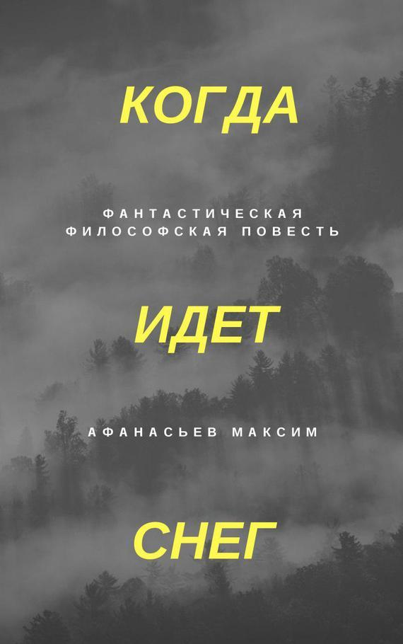

Когда идет снег
Максим Викторович Афанасьев
Тяжело дышал, крутил головой по сторонам. Боль мешала думать. Посмотрел вниз на ноги и сфокусировал внимание на струйке крови, которая стекала с подбородка на землю.
Я не верю. Это случилось. Я хочу слезть отсюда, я живой!
Вдалеке было видно несколько человек. Они шли в направлении к городу.
– Будьте вы прокляты!
Что я говорю, это же не их вина.
Подвигал пальцами рук, резкая боль.
Нужно быть сильным. Назад пути нет. Надо терпеть. Взять себя в руки. Я знал, к чему это приведет. Я же готовился. А чего я ожидал?
Посмотрел на руку. Металлический штырь торчал из запястья. То же самое со второй рукой. Концы штырей загнуты вверх, слезть невозможно, только если оторвать себе руки по локоть. Кровь потихоньку сочилась из ран.
Сзади висели еще два человека без сознания, а может они были мертвы.
– Эй! Слышите меня?!
Снова приступ боли. Руки и ноги нарывало. Чувствовал, как пульсирует кровь в конечностях. Закричал. Тяжелое дыхание, отдышка. Снова крик. Во рту пересохло. Поднял голову вверх. Солнце в зените.
– Забери меня отсюда!
День был в самом разгаре.
***
– Вот отличное место! – крикнул Корней.
Старик подошел, осмотрелся и скинул рюкзак. Стояли на небольшой лесной поляне. Корней с улыбкой смотрел на Старика, ведь это именно он нашел место для ночлега.
Хорошая же полянка, – думал Корней, – да и идти уже нет сил, прошли сегодня километров двадцать. Как же ноги гудят. Нет, не двадцать, скорее все сорок.
– Да, подойдет, – сказал Старик.
– Ставим палатку?
– Ставим.
Корней собирал дуги каркаса палатки. Старик копался в рюкзаке, встав на одно колено. Сдвинутые брови выдавали его беспокойство.
– На ужин печенье и фасоль, – сказал Старик, заглядывая в банку консервированного мяса, – тушенки осталось мало, надо тянуть.
–Хорошо.
Куда уж больше тянуть, и так едим по щепотке, а он все тянет. Так и с голоду помереть можно. И вообще, это моя тушенка. Как так вышло, что он начал отвечать за еду?
– Если температура продолжит падать, никакая тушенка нам не понадобится, – сказал Корней и скрепил еще несколько фрагментов каркаса.
– Не каркай, – проворчал Старик.
–Такой холод в это время года! Сейчас летние месяцы, ты сам говорил.
Старик ничего не ответил.
– Что мы будем делать, если начнутся морозы? – продолжал Корней.
– Не начнутся, – ответил Старик, – мы доберемся до теплых мест раньше.
– А ты не думал, что теплых мест может не быть?
– На юге всегда тепло.
***
На улице темнело, и поднимался туман. Даже в зимней куртке было ощутимо холодно. Старик пошел за дровами. Корней закончил с палаткой, разложил полиэтиленовый обрывок ткани и сел на него. Посмотрел вверх. Небо было грязное, серо-желтое. Потом перевел взгляд на свои рваные промокшие ботинки.
Заболеть здесь равносильно смерти, надо же было попасть под такой ливень. Можно как угодно тепло одеться, но все будет впустую, когда промокнут ноги.
Старика не было видно, но где-то вдалеке раздавались удары топора. Вернулся через пятнадцать минут. Кинул на землю кору ели с наплывом смолы, щепки трухлявого пня и бересту.
– Пошли, поможешь, – сказал Старик.
Отошли от лагеря метров на пятьдесят. На земле лежало срубленное дерево.
– Бери березку.
Взяли дерево за основание ствола и поволокли обратно.
– Можно было и поближе срубить.
– Мне это понравилось.
Вернулись на поляну.
– Руби дальше, юноша, – сказал Старик и протянул парню топор.
– Я уже не юноша, – пробурчал Корней и начал рубить ствол на поленья. Пока рубил согрелся и вспотел.
Через час горел костер, мокрые вещи сушились и источали пар. В метре от костра уже ничего не было видно. С тех пор как небо затянуло пеплом и пылью, ночью наступаа абсолютная темнота. Сидели молча, ужинали. Корней клевал носом и заваливался на бок, резко вздрагивал и поправлялся.
– Иди, ложись, – сказал Старик.
– Да, сейчас, – ответил парень, протирая глаз ладонью, – как думаешь, сколько мы за сегодня прошли?
– Километров пятнадцать.
Корней начал что-то высчитывать в уме.
– Мало как-то.
– Ты поменьше отдыхай, и будем больше проходить.
– С таким питанием у меня скоро совсем сил не останется идти, еще этот рюкзак весит целую тонну.
Посидев еще немного, Корней развернулся и залез в палатку, но вскоре вылез оттуда с одеялом, кинул его поверх полиэтиленового настила и лег сверху.
– Ты чего?– спросил Старик.
– Зря мы палатку поставили, очень уж там холодно. Я лучше у костра посплю.
– Да, вчера было теплее.
– Нам хватит дров на ночь?
– До рассвета дотянем.
Поднялся небольшой ветер, и пламя начало наклоняться в сторону, касаясь своим языком мокрой одежды. Старик перевернул вещи, чтобы подсыхали с другой стороны, и отодвинул их немого подальше. Потом лег на бок и подложил руку под голову. Смотрел на огонь. Хотел заговорить, но увидел, что Корней уже спит. Протянул руку к дровам, нащупал полено и кинул его в костер. Полежал еще несколько минут и закрыл глаза.
Спали плохо, постоянно просыпались от холода и подбрасывали дрова в костер.
***
Шли по лесу, за спинами висели походные рюкзаки. Вокруг было неестественно тихо. Лес был пустой и безжизненный. За все время пути они не встретили ни одно животное и не услышали ни одной птицы. Казалось, даже насекомые ушли из этих мест.
Старик сверял направление с компасом. Корней шел сзади, в нескольких метрах от него. Хромал из-за натертой ноги.
– Я не понимаю, зачем наносить ядерный удар? – спросил юноша.
Старик молчал, как будто не слышал вопроса.
– Я имею в виду, что тебе же ответят, – рассуждал Корней, – ведь у всех есть ракеты и бомбы.
Старик снова посмотрел на компас.
– Нам надо забирать чуть правее, мы отклоняемся, – сказал Старик, давая понять, что ему неинтересно обсуждать эту тему.
– Зачем вообще начинать войну?
– Для того, чтоб было больше власти и денег, – ответил Старик и понял, что теперь ему не отвертеться от разговора.
– А почему всем странам нельзя было стать одной большой страной, жить дружно и без денег? – спросил Корней и догнал Старика, чтоб идти с ним рядом.
Старик заулыбался.
– Деньги были удобным инструментом для взаиморасчетов.
– Почему нельзя сделать так, чтоб люди сильно хотели помогать друг другу безвозмездно? Попросил что-нибудь, и тебе дали, и ты так же даешь или делаешь что угодно для кого угодно. Я понимаю что это звучит глупо, просто пытаюсь представить такое общество.
Старик хотел ответить, но Корней продолжил.
– И вот люди дают друг другу все, что необходимо, пока все полезное, что есть на планете, не разделится между всеми людьми.
– А как передача будет происходить? Подошел, попросил, и тебе дали все, что возможно? – спросил Старик.
– Ну да.
– А как тогда защититься от людей, которые просят и просят, и пытаются нахватать себе побольше?
– А никто не пытается нахватать побольше, мошенников нет. Они не могут даже такое представить.
– И чем бы ты занимался в этом мире? Кем бы работал?
– Не знаю… мог бы строить дома.
– Представь, у всех все поровну, если что-то кончилось, можно попросить, и вот ты строишь дома, работаешь весь день.
– Ага, работаю не за деньги. Просто всем хочется работать.
– Да, ты работаешь, таскаешь тяжести с утра до вечера, работа у тебя сложная. А у кого-то работа легкая, и пользы от нее меньше, и занимает она мало времени, просто такая должность.
– У всех профессии разные, что тут такого?
– А почему тогда ты и он должны иметь поровну, если у вас разный труд и польза для людей разная?
Корней почесал затылок.
– Я пока еще не думал об этом, но я доработаю свой мир. Когда мы снова выйдем на шоссе?
– Смотря, как идти будем. Может через неделю, может раньше.
Спустя несколько часов сделали привал. Расстелили полиэтилен на сырой земле, сверху положили одеяла. По ощущениям температура была близка к нулю, без костра долго не просидишь.
Корней огляделся. Лес казался бесконечным во все стороны. Компас и старая карта дают хоть какую-то уверенность, что они не заблудились.
Обедали крекерами. Воду пили понемногу, пол-литра в сутки. Запас питьевой воды волновал их больше всего.
Старик положил рюкзак под голову и задремал. Корней просто сидел и с безразличным видом рассматривал стволы деревьев. Знобило, организм был ослаблен голодом.
Неожиданно Старик подскочил и посмотрел в сторону.
– Сон?
– Да.
– Расскажешь?
– Нет.
Через несколько минут двинулись дальше. К вечеру вышли к огромной поляне. После стольких дней однообразного лесного пейзажа, глазу было приятно посмотреть на открытое пространство. Вдалеке был виден край леса, левее начинался холм, и на этом холме, в нескольких километрах от них, над деревьями, торчала пожарная вышка.
– Ее нет на моей карте, – сказал Старик.
– Залезем?
– Да.
***
Из-за высокой травы, идти по поляне было сложно. До края леса оставалось метров двести.
Корней мечтал вслух.
– Наверное, ночевать будем на вышке. У пожарных должны быть кровати. Поспим хоть на кровати, впервые за несколько недель. Может, там еще еда осталась, консервы какие-нибудь – тушенка, фасоль, сгущенка.
Старик шел как обычно, немного впереди.
– Сгущенка, вино, девки… – с улыбкой добавил Старик.
– Что? – спросил Корней
– Да так…
– А что, думаешь, ее обчистили?
– Не знаю.
Несколько минут спустя, пробравшись через густой молодняк елей и каких-то кустов, снова вошли в лес.
Вышки не было видно, но Старик сделал засечку на компасе в ее направлении. Идти пришлось в горку. У Старика была сильная отдышка. На морщинистом, загорелом лице выступил пот. Корней, задрав верхнюю губу и сморщив нос, дышал ровно, глубоко. Подъем в горку заканчивался.
– Погоди, я отдышусь, – сказал Старик и сел на землю.
Корней открыл рюкзак.
– Давай по глоточку? – предложил парень, протягивая бутылку с водой.
– Ага, спасибо.
Еще через десять минут вышли на поляну, заросшую кустами. В центре поляны располагалась вышка. С небольшого расстояния на фоне деревьев она казалась огромной. Четыре вертикальных столба, поперечные перекладины крест-накрест, множество лестничных пролетов, провисшие тросы, натянутые в четыре направления для придания конструкции большей устойчивости. Электрический кабель от вышки по столбам уходил вглубь леса. Наверху находилась жилая кабинка размером с небольшую комнату.
– Ползем тихо, – сказал Старик и присел на корточки.
Корней сел рядом. Изо рта шел пар. В сумерках подкрадывались к вышке. Старик повернулся к Корнею.
– Смотри.
– Вижу, как будто люди сидят, – сказал Корней, вглядываясь в непонятные силуэты.
– Мертвые что ли, – предположил Старик.
– Может, не пойдем? Сдалась нам эта вышка?
– Нужно проверить ее, у нас кончается пища.
– А если там есть кто-нибудь? – с тревогой спросил Корней.
– Надеюсь, что никого, – сказал Старик и двинулся в сторону вышки.
– Не надо, давай уйдем, – Корней схватил его под руку и слегка потянул на себя.
– Через минут двадцать станет совсем темно. Какие еще варианты?
– Отойдем подальше и все.
– Подальше не успеем. Если тут есть люди, они заметят наш костер и придут ночью. Нам не нужны такие сюрпризы, правильно?
– Да, но…
– Давай, за мной.
Подползая на четвереньках к основанию вышки, резко остановились.
Корней учащенно задышал, уши начали гореть, сердце заколотилось.
Два трупа с оторванными конечностями и обглоданными лицами сидели, прислонившись спинами к столбу вышки. Еще одно обглоданное до костей туловище лежало на земле.
***
Небо чистое, как назло. Солнце где-то сбоку. Жажда. Руки онемели, острая боль сменилась покалыванием и нытьем. Ноги раздувались и пульсировали. Дышать стало тяжелее. Висел и смотрел вниз на сухую вытоптанную траву под собой.
Немного дрогнул и оживился.
Как он сюда подошел? У меня видение? Я схожу с ума?
Внизу стоял человек. Точнее, силуэт человека, абсолютно черный. Как будто в пространстве образовалась пустота в форме и подобии человека. Не видно ни лица, ни деталей, только контур. Черный человек стоял, запрокинув голову, и смотрел.
Что он будет делать? Что происходит? Я готов ко всему. Сейчас мне уже ничего не страшно.
Черный человек пошел вокруг столба и пропал из поля зрения. Стоял сзади.
Что он делает? Трава приминается под его ногами, значит он из плоти.
Вскоре он вышел с другой стороны. Встал напротив и произнес:
– Почему ты здесь?
***
– Корней, – тряс его за плечо Старик, – приди в себя.
– Я в порядке, – шепотом ответил юноша.
– Надо осмотреть вышку, – сказал Старик.
– Что с ними могло произойти?
– Понятия не имею, может зверь напал.
– Как ты можешь быть спокоен? Тут люди разорванные, а ты просто хочешь осмотреть вышку?
– Это самый лучший вариант сейчас.
– Лучше бы я вообще не уходил с тобой.
– Можешь вернуться.
Корней отвел взгляд в сторону.
Поднимались по деревянным ступеням, пролет за пролетом. Корней постоянно оглядывался вниз, пытаясь что-то разглядеть в сумраке. Чувствовал, что тот, кто убил этих людей, сейчас смотрит издалека и радуется, потирая ладони, мол, сами поднимаются в ловушку, откуда только один выход.
Оказавшись выше уровня леса, поняли, что он до горизонта, нет конца и края.
Ступени кончились. Вышли на лоджию, которая идет по периметру жилой кабинки. Стекла в окнах целые, дверь распахнута.
Старик первым зашел внутрь. С виду обычная комната. Вдоль стен расставлена мебель. Стол, тумбочки, кровать, плита, холодильник, умывальник, печка, шкаф. Наверху множество полок. В центре комнаты стоит круглый столик-тумбочка, на котором лежит огромная рамка с разбитым стеклом. Видимо, раньше в рамке была карта местности. На полу валяются пакеты, коробки и прочий мусор. На стене висит календарь. С новым 2147 годом!
Корней взял со стола часы, повертел их в руке и положил на место. Батарейки давно сели. Старик пощелкал выключателем, света нет. Потом проверил холодильник. Пусто. Выругался матом.
На улице поднялся ветер и дверь распахнулась. Пришлось подтащить стол и подпереть ее.
Старик подошел к умывальнику и открыл дверцу под раковиной. Вытащил металлическое мусорное ведро, вывалил мусор на пол и поставил ведро к кровати. Взял из-под печки несколько сухих дров.
– Наруби помельче, – сказал Старик, протягивая полено Корнею.
– Сейчас.
Нарубив щепок, Корней открыл печку.
– Ты что делаешь? – спросил Старик.
– Хочу разжечь.
– Надо подождать, пока полностью стемнеет. Дым может привлечь внимание.
Старик взял книгу с полки, нарвал листов, смял их и кинул в ведро.
– Кидай щепки сверху. Будет обогрев у кровати.
Развели небольшой костер в ведре.
Сидели, грелись.
– Что могло произойти с этими людьми? – спросил Корней.
– Не знаю, но сегодня будем спать по очереди, – ответил Старик.
– А завтра встанем и бегом отсюда, да?
– Утром надо будет тщательно обыскать всё, может, что полезное осталось, а потом бегом, да.
– А если это волк или медведь, он же сможет подняться сюда по ступеням?
– Животные давно ушли отсюда.
– Но человек не мог сделать такое.
– Не мог. Ладно, надо поесть, – сказал Старик и потянулся за рюкзаком.
Открыли банку тушенки. Запивали кипяченой дождевой водой, которая осталась после последнего ливня. Старик достал маленькую металлическую флягу с нарисованным на этикетке огоньком и принялся заправлять зажигалку.
На улице наступила полная темнота.
– Ложись спать, я займусь печкой, разбужу через пару часов, – сказал Старик.
– Но ведь трупы несвежие, да?
– Не знаю, на улице холодно, поэтому сложно определить.
– Их же не сегодня разорвали?
– Да не знаю я, ложись спать. И так не выспимся.
Корней снял ботинки и лег на кровать. Костер в мусорном ведре потрескивал и играл языками пламени, озаряя бледное худое лицо парня.
Видно же, что их кусали, ну а кто еще, если не волк или медведь? Старик вечно говорит “не знаю”, когда не знает. Нет бы, предположить что-нибудь. Я поражаюсь его спокойствию. Я и раньше замечал, что он никогда не нервничает, но быть спокойным в сегодняшней ситуации – это уже странно. По-любому, военным был. Ничего ведь не расскажет про себя.
Закрывая глаза и проваливаясь в сон, Корней видел, как Старик возится возле печки.
***
– Просыпайся! – тряс его за ногу Старик.
– Что случилось?
– Все в порядке, твоя очередь дежурить, – сказал Старик и протянул ему топор.
– Зачем топор?
– Если стая волков нападет, будешь оборонять меня, пока я сплю.
– Не смешно.
– Как начнет светать, разбуди. И огонь в печке больше не разводи, дым будет видно.
Корней с трудом поднялся и посмотрел в окно. Темнота. Сел на деревянный пол напротив кровати и в свете маленького костерка в ведре разглядывал тупое лезвие топора. Тело ломило от усталости, невыносимо хотелось спать.
Еще так долго идти. Может зря я его послушал, и мне нужно было остаться в деревне? Ведь мы как-то жили, выращивали картошку, ели консервы, жили бы и дальше. На картошке протянул бы наверно. Мне же говорили, что я пожалею что ухожу. И что в итоге? Правы все были? Идем черт знает сколько дней, я уже сбился со счету. Спим на улице, пьем дождевую воду, еды осталось… да я даже не знаю, на сколько дней ее осталось. А что я знаю про него? Да вообще ничего. Ушел, поверил, что скоро все замерзнет, поверил на слово. Хотя, с другой стороны, и правда, температура же падает. Вон, на улице уже минус, наверное, а сейчас лето. Такого не было никогда после войны. Картошку выращивать в промерзшей земле что ли? А кроме картошки и есть скоро нечего стало бы. Не знаю я, что делать. Плыл по течению всю жизнь, и сейчас плыву. А какие варианты? Вернуться уже не получится, еды не хватит, дорогу я не найду, карта и компас только у Старика. А если он ошибается? Еще и эти тела под нами. За что мне все эти трудности?
***
Проснулся от удара в бок. На улице был день.
– Какой же ты безответственный! – ругался Старик, нависая над Корнеем.
– Извини, я сам не знаю, как так вышло.
– Мы можем рассчитывать только друг на друга, у нас тут нет никого больше! Как мне на тебя надеяться в дальнейшем?
– Ничего же не случилось.
– Сейчас не случилось, завтра случится!
– Просто так все неожиданно. Мы шли спокойно столько дней, и тут на тебе! Я тоже напуган!
– Напуган он! Страх нужно проявлять продуманным и осторожным поведением, а не так, как ты! Собирайся!
– А что собираться, рюкзак одеть, да и все.
Корней хотел предложить перекусить, но потом передумал.
Старик торопливо осматривал полки. Посуда, какие-то документы, пакеты, пустые банки, тряпки. Все полезное давно вынесли.
Корней подошел к столику в центре комнаты, открыл нижнюю полку.
– Смотри! – воскликнул юноша, держа в руках моток веревки.
– Пригодится. Хоть какая-то от тебя польза, – недовольно сказал Старик.
– Хватит, а.
– Давай сюда ее.
Старик открыл рюкзак, убрал себе веревку, достал карту, склеенную скотчем в местах сгибов, разложил ее на полу и сел. Корней встал напротив.
– Мы находимся примерно вот тут, – сказал Старик, указав пальцем на карте.
– А почему вышка не отмечена? – спросил Корней.
– Не знаю, может так и надо. Шоссе, с которого мы сошли, вот. А вот этот поворот. Похоже? – Старик посмотрел на Корнея.
– Вроде бы да, – неуверенно ответил парень.
– Отсюда мы двигались строго на юг. Прошли по лесу километров двести, может меньше. Значит, должны быть примерно в этой области, – сказал Старик, двигая палец в бок.
– Наверно. Я просто в масштабах карт не разбираюсь, – ответил Корней.
– Вот тут сто километров, – Старик показал двумя пальцами отрезок на карте.
– Понятно. Значит, нам идти еще примерно столько же, – прикинул Корней.
– Примерно, да. Как выйдем, посетим этот поселок, – Старик указал пальцем на условный знак в виде нагромождения каких-то прямоугольников.
– В общем, еще неделю по лесу минимум.
– Это в лучшем случае.
– Да уж.
– Ладно, ты готов?
– Конечно.
Спустились по ступеням. Тела лежали на своих местах. Корней старался не смотреть на них.
– Ты замечал, что когда пытаешься не смотреть на что-то, взгляд сам туда падает, тело, как будто специально, действует против воли? – спросил Корней.
– Нет, не замечал.
Старик посмотрел на компас.
– Нам в ту сторону.
***
Несколько дней шли по лесу. Старик был очень осторожен. Спали по очереди. Палатку не ставили, ложились прямо у костра. Несколько часов сон, несколько часов дежурство, снова сон, снова дежурство. Из еды остались только крекеры. Вода почти кончилась. Надеялись, что пойдет дождь.
Плелись еле-еле. Корней шел немного сзади и рассуждал.
– Интересно, а когда мы дойдем до теплых краев, мы сможем организовать поселение? Как это вообще будет выглядеть?
– Я пока не думал.
– Представь, что мы добрались, и что делать?
– Возможно, там уже живут люди. Присоединимся к кому-нибудь.
– А если мы не найдем людей? У меня есть план.
– Поведай.
– Вот мы пришли, на улице плюс двадцать, и зимы тут не бывает. Людей, общин, городов нет – никого нет. Может они и есть где, но искать их сложно, мир-то большой.
– Еще какой.
– Мы повесим флаг на шоссе с указателем на наше место, где мы будем обживаться. Люди, кто так же, как и мы, идут на юг, будут видеть это и присоединятся к нам. И со временем мы превратимся в поселок. Построим домики деревянные. Начнем выращивать что-нибудь.
– А не проще ли занять уже готовое поселение с домиками? Если идти по шоссе, они будут попадаться.
– Можно и так. Будем всем путникам предлагать остаться жить у нас и выстроим новое общество.
– Главное случайно на большой город не выйти.
– А если выйдем, то точно не спастись?
– У нас есть карта, так что все будет хорошо.
Начался небольшой спуск, растительность стала гуще. Раздвигая кусты руками и пробираясь вперед, вдруг остановились.
– Что-то я не понял, – растерянно произнес Старик.
– Река! Воды наберем! – обрадовался Корней.
Подошли к берегу. Река была небольшая, со слабым течением. На противоположном, обрывистом берегу тут же начинался лес. Корней потрогал воду рукой. Ледяная.
Старик сел на траву, достал карту и уставился в нее.
– Ты чего? – спросил Корней.
– Я не понимаю, тут не должно быть никаких рек, – ответил Старик, не отводя взгляда от карты.
– Может, на этой карте реки не обозначены? – предположил Корней.
– Обозначены, – Старик ткнул пальцем в карту, -
вот здесь река и вот еще одна.
– Может мы вот у этой реки?
– Нет, она вообще на западе от нас должна быть.
– То есть мы не знаем, где мы?
– Мне надо подумать, помолчи немного.
– Хорошо, я пока наберу воды.
– Мои тоже наполни.
Корней подошел к реке с четырьмя полтора литровыми бутылками. Три литра воды на человека тянули от дождя до дождя. Воду кипятили в металлическом котелке.
Корней набрал воды, помыл руки и умыл лицо.
Неплохо бы помыться, не мылись уже несколько недель. Как бездомные. Хотя, мы и есть бездомные.
– Давай разведем огонь и помоемся? – спросил Корней.
– Холодно, – ответил Старик, продолжая разглядывать карту, – если заболеешь, умрешь.
– Я закаленный.
– Я тебе говорю, не надо мыться тут, не выдумывай.
Корней ходил вдоль берега. Подобрал камешек и кинул его в реку. По воде пошли круги.
Интересно, тут есть рыба? Даже если и есть, то чем ее ловить? Как же хочется поесть. Надо гнать эти мысли. Только еще тяжелее становится, слюни текут.
Поднял голову и посмотрел на небо. Грязное, затянутое пеленой из пепла и пыли.
Сколько еще мы не увидим солнце? Эта грязь же не может вечно летать в атмосфере. Рано или поздно должен быть просвет.
На нос Корнею упала снежинка. Вытянул руку вперед, повернув ладонь к небу. Еще несколько снежинок упали на руку.
– Снег пошел! Слышишь! – кричал Корней и быстрым шагом двигался к Старику.
Старик, прищурив глаза, смотрел вверх. На карте были мелкие капельки от растаявших снежинок.
***
– Почему ты здесь?
– Потому что я люблю этот мир.
– Видимо, он не отвечает взаимностью.
– Он пока еще не готов.
Черный человек показал рукой на двух людей, висевших сзади.
– Они тоже любят этот мир?
– Они преступники. Это все что я знаю.
– А ты, видимо, чем-то лучше?
– Для тех, кто сделал это со мной, я хуже.
– Почему?
– Они боятся меня. Я опасен для них.
Черный человек немного помолчал.
– Тебе больно?
– Боль можно контролировать.
– Получается?
– Кто ты такой?
– Ты не поймешь.
***
– Кто-то говорил, что мы доберемся до теплых мест раньше морозов? – язвительно произнес Корней.
Старик ничего не отвечал.
– В итоге мы все же заблудились, – продолжал юноша.
Старик молча смотрел сквозь Корнея.
– Долго мы еще будем сидеть тут?
– Нет, не долго, пойдем по компасу на юг, – раздраженно ответил Старик.
– А ты уверен, что компас нас вообще ведет на юг?
– Теперь уже не уверен. А ты чего такой умный? Может, совет дашь полезный, а?
– Я просто устал. Все идет не так. Хоть что-нибудь бы пошло нам на пользу. Но нет же, как будто кто-то специально это делает.
– Не все, река дала нам воды.
– Если начнется снегопад, у нас будет много воды в виде талого снега, сдалась мне эта река!
– Надо идти дальше, – Старик встал.
– По компасу? А если он врет? Давай сверим компас еще с чем-нибудь? – Корней нервничал, – солнце не понятно где, да и черт с ним! Есть же еще способы: мох на деревьях или еще что-нибудь?!
– Можно дождаться рассвета, и посмотреть: с какой стороны небо будет светлее, там и восток, – предложил Старик.
– Хорошо, а сейчас что? Сидеть ждать рассвет? Потеряем день целый.
– Сейчас двигаемся на юг по компасу, утром сверим его с солнцем. Главное держать себя в руках, иначе – пропадем, – спокойным голосом сказал Старик, засовывая карту в рюкзак.
– Но все же, мы заблудились?
– Заблудились.
– Ясно.
***
Идти точно на юг не получилось. Весь день шли вдоль реки. Переплывать ее, не будучи уверенными в компасе, нерационально. Река шла по правую руку. Местами отдалялись от нее вглубь леса из-за обильных зарослей кустарника возле берега. Снежинки падали и тут же таяли. Стало заметно холоднее, пришлось завернуться в одеяло и идти прямо так.
Почему я должен проводить молодость таким образом? Он, наверное, в мои годы развлекался. Их поколение уничтожило мир, а нам его возрождать, начинать все с нуля. И идти надо по другому пути. Если повторять все, как было в прошлом, мы снова придем к тому, что сейчас. А может, это естественный ход событий, и каждая разумная цивилизация проходит свой апокалипсис? Может, это как необходимый опыт, как урок, без которого не выстроить нормальное общество. Как начать ценить что-то? Только потеряв. Мы получили этот опыт и теперь должны развиваться с новым пониманием мира.
Через несколько часов остановились на обед.
– Костер будем разводить? – спросил Корней.
– Придется, надо воду прокипятить, – ответил Старик, оглядывая местность.
– Достань топор, я дров сделаю, – сказал Корней и скинул с себя одеяло.
– Корней, – тихо произнес Старик.
– Что?
Старик смотрел ему за спину. Корней резко обернуся.
Огромный медведь, метрах в ста, стоял на задних лапах и глядел в их сторону.
– Что делать?
– Стой спокойно.
Медведь опустился на четвереньки и пошел вперед.
– Не беги.
Раздался раскатистый рев.
– Только не беги.
Корней бросился к ближайшей ели.
– Стой, дурак, погубишь нас!
Зверь рванул с огромной скоростью.
Корней лез на дерево, царапая руки и лицо о ветки.
– Старик! Спасайся!
Оглянулся и увидел что животное внизу, прямо под ним.
– Он лезет! Он лезет за мной!
Дерево раскачивалось и скрипело, ветки хрустели и падали. Корней чувствовал, что вот-вот его схватят за ноги, потащат вниз, начнут трепать и рвать на части. Ветка в руке сломалась, и он понял, что выше уже лезть не куда, ветки слишком тонкие, он на самом верху, в ловушке, в тупике.
Медведь методично лез все выше. Корней вцепился в ствол ели, обхватив его руками. Дерево раскачивалось все сильнее.
Он сейчас достанет меня! Что делать?! Надо прыгать! Куда прыгать?!
– Старик! Старик!
Корней орал изо всех сил, прижавшись лицом к стволу ели.
Медведь остановился, пытался сбить его лапой. Начал рычать и скалиться. Корней смотрел вниз, пара метров до неминуемой мучительной смерти.
После нескольких попыток достать Корнея, зверь потихоньку сполз на землю и отбежал в сторону.
Парень мертвой хваткой держался за ствол.
– Корней! – раздался крик Старика откуда-то сбоку.
– Да!
– Ты как?!
– Никак! Я тут чуть не помер!
– Сиди там, не пытайся слезть!
– А ты где?!
– На соседнем дереве!
Старик потряс ветками.
– Вижу!
– Нам придется подождать немного!
– Я догадался!
Медведь несколько раз подбегал к дереву Корнея, вставал на задние лапы, передними лапами упирался в ствол и просто смотрел. Ель была густая и следить за зверем, когда он отбегал от дерева, было сложно.
– Ты видишь его?! – спросил Корней.
– Да! Он подо мной!
Медведь начал суетиться и бегать от дерева к дереву.
– Что он делает?! – крикнул Корней.
– Не знаю. Мне кажется, можно не кричать, я и так тебя услышу, – ответил Старик.
– Он у тебя?
– Нет.
Возня на земле прекратилась, зверя не было видно. Корней учащенно дышал и трясся.
– Фух… – протяжно произнес юноша.
– Что?
– Это было… это было… опасно.
– Ты с такой скоростью рванул на ель, – сказал Старик.
– Да я когда его увидел, у меня душа в пятки ушла.
– Молодец что хоть по земле не побежал.
– Как он за несколько секунд оказался около нас? Он же далеко стоял.
– Медведи очень быстро бегают.
– Я понял, откуда взялись те трупы у вышки.
– Да. Скорее всего, путники, так же как и мы, издалека увидели вышку, решили обследовать, ну и в итоге…
– Представь, что с нами могло случиться, если бы мы там развели костер и легли спать на земле.
– Да, лучше не думать об этом.
– Так он мог и на вышку подняться!
– Мог.
Корней немного спустился, сел на толстую ветку, ногами уперся в ветки пониже.
– Это получается, он шел за нами два дня? – предположил Корней.
– Выходит, что так. А может это еще один медведь.
– И что нам теперь делать?
– Подождем. Может, уйдет.
Корней попытался разглядеть что-либо сквозь густые ветви ели.
– Я не вижу его.
– Я тоже.
Ветки на дереве Старика слегка затряслись.
– Я спущусь, посмотрю, – сказал Старик.
– Только с дерева не слезай!
– Просто чуть пониже слезу, гляну и все, а то тут не видно ничего.
Старик остановился в нескольких метрах от земли. Зверь лежал между их деревьями. Как только они встретились взглядом, медведь тут же бросился к ели. Через мгновение Старик был снова на самом верху. Животное покружилось вокруг дерева и отбежало в сторону.
***
Какой странный человек, в мой последний час мне поистине что-то интересно. Странное чувство. Почему я не смогу понять, кто он? Может, он бес? Если бес пришел искушать меня и предлагать спасение, это ли не является доказательством моих идей? Если я умру, сбудется пророчество. Он попытается помочь мне. Попытается предотвратить мою смерть. Я не должен ему верить.
Черный человек стоял неподвижно, голос его был четкий и громкий.
– Ваш мир вскоре может исчезнуть.
– Я знаю, но я верю, что это можно исправить.
– И кто же будет исправлять?
– Люди будут исправлять.
– Ты веришь в людей?
– Если б не верил, меня бы тут не было.
– Как можно верить в невежественных, жадных, эгоистичных существ?
– Когда рождается ребенок, он абсолютно пустой и его можно наполнить.
– Но сформировавшуюся личность уже ничем не наполнишь.
– Их можно объединить общей идеей, и тогда постепенно люди начнут меняться.
– Какой идеей?
– Идеей добра и любви, и каждое следующее поколение будет становиться лучше.
– В этом и заключается твоя вера?
– Да.
– Каждое следующее поколение будет становиться лучше, нда…
Зачем он повторяет мои слова? К чему вообще эти бессмысленные вопросы? Как же тяжело дышать.
– Ты сказал, что любишь этот мир и хочешь изменить его.
– Да.
– За твои идеи тебя приговорили к смерти?
Притворяется, как будто не знает ничего. Начинает издалека. Зачем? Хватит разговоров, и так много чести.
– Я знаю, тебе сложно дышать и разговаривать. Я могу облегчить твои страдания. Только в целях удобства разговора. Когда я все выясню, я оставлю тебя.
– Остановись, что ты делаешь? Не трогай меня! Я не просил! Убери от меня руки!
Стало легче. Что это было? Боль исчезла, дышать легко. Чудеса творит. Я отказался от него. Бесы не могут действовать против воли.
– Что ты сделал со мной?
– Не спрашивай у меня ничего. Я уже сказал, что ты не поймешь.
– Сюда идут люди!
Черный человек обернулся. Вдалеке шли три солдата, вооруженные копьями. Красные плащи развивались за их спинами. У одного из них было ведро в руках. Черный человек пропал из виду.
Интересно, они видели его? Подходят. Неужели пришло мое время.
Через несколько минут солдаты стояли у столба. Один из них достал губку и смочил ее водой из ведра.
– Принесли мне воды. Но я не хочу пить.
– Как скажешь.
– Пить он не хочет. Нам оно вообще надо? Бей ему под ребра. А ты тех двоих проверь.
– Они не шевелятся.
– Я сказал проверить!
Один из солдат прицелился копьем. Черный человек появился прямо перед ним. Солдат выронил копье и замер. Черный человек коснулся солдата, и тот исчез. На землю упала лишь одежда. Двое других бросились бежать в разные стороны. Черный человек мгновенно оказался сначала около одного и в ту же секунду около другого. На земле остались лежать три комплекта солдатской одежды. Вскоре одежда начала постепенно становиться прозрачной, пока не исчезла.
– Что ты с ними сделал? Куда пропала их форма?
– Тебе их жалко?
– Конечно, это же люди! У них были семьи! Они просто выполняли приказ!
– Безынициативные существа.
– Ты убил их?
– Нет.
– Куда они делись?
– Никуда. Я стер их.
– Я не понимаю.
– Их никогда не было.
– Что значит ”их никогда не было”?
– Ты “был” пока о тебе кто-то помнит, пока остаются какие-то следы твоего пребывании во вселенной.
– Если ты уничтожил их оружие и форму, это еще не значит, что от них ничего не осталось. Их командир, семья, друзья вскоре поймут, что они пропали и сюда придут еще солдаты.
– Их никто не посылал. Их командиры и близкие не знают о них ничего, как и остальные люди на земле. Я уже сказал, что в мире нет следов их существования. Этих людей никогда не было.
– А как же души этих людей, что с ними?
– У тех, кого никогда не было, не может быть души.
– Почему тогда я помню о них?
– Пока я с тобой не закончил, мне нужно, чтобы ты помнил все, что происходит и будет происходить. Когда я уйду, ты забудешь обо мне и обо всем, что случится дальше.
– Ты сказал, что стер их.
– Да.
– Чтоб стереть их, нужно поменять прошлое?
– Да.
– Прошлое невозможно изменить.
– Мое нет, а ваше да.
– Но…
– Хватит вопросов. Наш разговор прервали. Теперь этих людей нет, и нам никто не мешает. На чем мы остановились? На том, почему же тебя казнили. За идеи… И что же было вредного в этих идеях?
– Я пошел против власти.
– Кто-то боялся потерять все из-за тебя? Боялся настолько сильно, что устроил публичную казнь?
– Да, чтоб другим неповадно было.
– Другим?
– У меня остались последователи, мои ученики.
– И чему же ты их учил? Ах, да, любви и доброте …
– Я вижу то, чего не видят другие. Я посвятил жизнь тому, что пытался вложить моральные ценности в сознание людей. Я могу помочь людям исправить мир.
– Расскажи.
– Я столько всего сделал, рассказать все не получится.
– Все и не надо. Я попрошу тебя ответить на некоторые вопросы.
– Спрашивай.
– Как должны измениться люди в будущем согласно твоим учениям?
– Во-первых, они станут честными.
– То есть, не будут воровать? Или будут говорить только правду? А может, они не будут заниматься самообманом?
– И то и другое… и третье.
– Честных людей никогда не было и не будет. Тот, кто голодает, украдет кусок хлеба, чтоб выжить. Тот, кто имеет много золота, украдет у того, у кого золота еще больше. У совести любого человека есть цена. И чем человек богаче, тем цена эта выше.
– Я никогда не крал.
– Будешь голодать – украдешь.
– Я ничего не крал даже когда голодал.
– Нас снова пытаются прервать.
Вдалеке показалась фигура ребенка. Он шел бодрым шагом, подкидывал и ловил рукой камешек. Прицелился и кинул его куда-то в сторону. Мальчику было лет десять. Подойдя ближе, он стал с любопытством разглядывать раны на теле.
– Пожалуйста, не делай с ним ничего!
Мальчик немного дернулся.
– С кем не делать?
– Ты слышишь меня?! Он еще ребенок!
– Я не ребенок! Мне уже девять! С кем ты разговариваешь?
Черный человек появился около мальчика. Ребенок с криком побежал проч.
– Я не собирался его трогать. А те люди пытались убить тебя, мне пришлось их стереть.
– Я могу тебя попросить?
– Можешь, но вот могу ли я выполнить просьбу?
– Я не знаю, кто ты и зачем расспрашиваешь меня. Я вижу, ты обладаешь могуществом, и ты тратишь свое время здесь, значит, я имею какую-то ценность для тебя, и по сему, прошу не убивать и не стирать более никого. Пожалуйста.
– Хорошо. У меня есть к тебе еще вопросы.
– Спрашивай.
***
Темнело, снег неспеша падал на землю. Корней сидел на дереве, завернутый в полиэтилен и еще какие-то тряпки поверх одежды, свое одеяло он оставил на земле. Рюкзак висел на сучке чуть выше. Корней расположился так, что можно было даже прилечь на толстую ветку, упираясь ногами в ветки пониже.
Главное тут не уснуть. Хотя попробуй, усни в такой холод. У медведя-то мех, вон какой. Он, наверное, комфортно себя чувствует, а мы тут закаляемся.
– Старик, посмотри медведя, может он ушел.
– Сам посмотри.
– У тебя удобнее.
Старик немного спустился, свесился головой вниз и залез обратно.
– Лежит метрах в двадцати.
– Нам тут ночевать придется?
– Боюсь, что да, уходить он не собирается. Наверное, понимает, что кроме нас есть ему нечего.
– Если я усну, то свалюсь с дерева.
– Тебе нужно взять рюкзак, размотать лямки, обернуть их вокруг какой-нибудь толстой ветки и вставить обратно. Получится, как будто рюкзак одет на ветку.
– Зачем?
– Потом надеть рюкзак и закрепить третью лямку для поясницы вокруг себя.
– Я понял: если я усну, то не свалюсь, а повисну на рюкзаке.
– Все верно, а у меня, к счастью, есть веревка.
– Это я ее нашел!
– Можешь подойти забрать.
Корней продел ветку через лямки походного рюкзака и одел его за спину. Немного потянулся вперед, проверяя надежность системы.
Я бы никогда не догадался так сделать. Молодец Старик. Может, еще придумает, как нам согреться?
– А как быть с холодом? – спросил Корней.
– Никак, терпеть.
– И еда вся у тебя.
– Я тебе оставлю, тут на один раз. Завтра будем думать, что делать. А может, он уйдет к утру.
– Как он ночью пойдет, на ощупь?
– Не знаю, посмотрим. Я попробую подремать немного.
Я поражаюсь его простотой. Как тут можно подремать?
Примерно через час стало совсем темно, поднялся ветер, и чувствовалось, как покачивается дерево. Вокруг ничего не видно, но по звуку понятно, что началась настоящая метель. Корней трясся от холода, проваливался в неглубокий сон и тут же просыпался. Пышная ель хоть как-то защищала от снега и ветра. Ночь тянулась очень медленно. Было ощущение, что она никогда не кончится.
– Старик.
– Старик!
Из-за сильного ветра приходилось кричать.
Не слышит. Спит наверно. А вдруг он упал с дерева? Хотя, я бы понял, я бы услышал крики и рев медведя. А если я спал в это время?
– Старик! – Корней крикнул громче.
– Что! – раздался крик с соседнего дерева.
– Просто проверяю, как ты там!
– Так же, как и ты!
– Погодка-то какая!
– Пурга!
– Как думаешь, сколько сейчас время?!
– Не знаю, я засыпал несколько раз!
– Интересно, медведь тут?!
– Как рассветет, проверю!
Оставшееся время до рассвета Корней ерзал на ветке, пытаясь уснуть. Не вышло. Спину ломило, ноги затекли, пальцы на руках задеревенели от холода. Организм был простужен. Несколько раз звал Старика, но тот, видимо, спал. Счастливчик.
Когда начало светать, оказалось, что все вокруг засыпано снегом. Ветер утих. Уставший, невыспавшийся, Корней смотрел вниз. На снегу были видны следы медведя.
Ходил тут ночью. Интересно, кто раньше умрет с голоду, мы или он. Старику повезло, у него хоть печенье осталось. Хорошо, что с водой проблем нет. Жаль, прокипятить ее не успели. Хотя, я скорее замерзну на этом чертовом дереве, чем умру от жажды или голода.
– Старик!
– Что.
– Доброе утро.
– Доброе. Ох, ну и намело.
– Подо мной следы медведя. Он ночью подходил к дереву.
– Подо мной тоже.
– Сейчас посмотрю его.
Старик спустился пониже и огляделся.
– Его нет. Вижу следы.
– Куда ведут?
– Куда-куда, в лес ведут, тут вариантов нет.
– Я понимаю, что в лес. В какую сторону?
– Погоди. Попробую залесть повыше и с ориентироваться.
Старик полез на самый верх дерева. Оказавшись там, достал компас и сверил его с положением солнца.
– Компас рабочий. Получается, медведь пошел обратно в сторону вышки, – сказал Старик, спускаясь вниз.
– Надо слезать, иначе замерзнем.
– Да, только будь готов снова вернуться наверх. Рюкзак не бери пока. Я слезу первый.
Через минуту Корней сполз с дерева и провалился по щиколотку в снег. Старик стоял внизу с топором и крекерами.
– На, перекуси, это последние, – сказал Старик и протянул парню печенье.
Корней тут же запихнул все в рот.
– Что делаем?
– Надо сделать костер и согреться. Заодно посмотрим, прибежит или нет.
– Согласен, отходить далеко опасно. Не на каждое дерево я смогу так быстро забраться.
– Я тем более. Пойдем, вон ту рубанем, похоже сухая, – сказал Старик и показал рукой на тонкую березу.
Деревце стояло в нескольких десятках метров от них.
Шли медленно и осторожно, как по минному полю. Постоянно оглядывались.
Подойдя к дереву, Старик ударил по березе один раз топором и замер.
– Вроде не бежит, – тихо произнес он.
– Руби, я смотрю.
Через несколько минут приволокли срубленное дерево обратно. Корней рубил ствол, Старик внимательно смотрел по сторонам.
– Значит, нам по компасу через реку? – спросил Корней.
– Да.
– Будем ждать, пока она замерзнет?
– Да.
– Сколько это дней?
– Не знаю. Как льдом покроется, попробуем на животе переползти.
– Ясно, – сказал Корней, сложив несколько поленьев, – поджигай. Я думаю, разгорится.
Старик достал из кармана зажигалку и сел возле сложенных домиком дров. Как только загорелся небольшой огонек, Корней тут же поднес к нему ладони. Сидели, уставившись на огонь. Костер разгорелся, и пришлось немного отодвинуться. Жар приятно расползался по телу.
Минут через пять Старик встал, потянулся и посмотрел в сторону. Зверь несся с большой скоростью, поднимая за собой столбы снега.
– На дерево! – закричал Старик.
Медведь подбежал к ели Старика, залез на нее метра на два и сполз вниз.
– Черт! Да что же делать-то!
Старик ругался и психовал. Ветки на его дереве тряслись. Корней наоборот был спокоен, сидел молча, чувствовал себя обреченным.
Еще одну ночь тут я не вынесу. Надо что-то придумать. Должен же быть способ обмануть животное. Мы же люди, мы умнее. Но мы находимся в его стихии, на его территории, он тут хозяин. Загнанные в угол, безоружные. Есть топор. Можно ли совладать с медведем одним топором? Я не уверен, что справился бы с ним, даже имея огнестрельное оружие.
Медведь караулил их между деревьями. Старик успокоился и притих. Корней достал из рюкзака тряпки и полиэтилен, накинул на себя, как плащ.
Невыносимо просто так сидеть. Самая страшная пытка – это когда нечем занять мозг.
– Старик!
– Что.
– Ты в порядке?
– Да.
– Надо думать, как выбраться отсюда.
– У меня нет мыслей.
***
Корней смотрел вниз на снег. Вспоминал свою школу, свой дом. Как они с отцом строили курятник, и как мать ушла от них. Как отец начал пить, и как он нашел его мертвого в бане. Остановка сердца.
Почему воспоминания нахлынули именно сейчас? Так внезапно и такие нехорошие. Я не люблю вспоминать об этом. Но мысли сами лезут в голову. Хочется вспомнить что-нибудь положительное, но ничего не приходит на ум. У Старика ведь тоже есть прошлое. Почему он ничего не рассказывает?
– Старик!
– Что?!
– Почему ты ничего не рассказываешь о себе?
– Сейчас-то это к чему?
– Просто любопытно. Мы столько уже идем вместе, и возможно, это конечная точка нашего пути, а я даже имени твоего не знаю.
– Во-первых, это не конечная точка нашего пути. Во-вторых, я не хочу ничего вспоминать.
– Ладно. Скажи хотя бы, кем ты был до катастрофы?
– Преподавателем. Преподавал астрономию в университете.
– Обалдеть! А как тебя зовут? Была ли у тебя семья? Сколько тебе лет?
– Корней, я не хочу вспоминать что было раньше. Той жизни уже нет, и меня того прежнего уже нет. Мне неприятно говорить об этом.
– Хорошо, профессор, или как вас там называли. А ты не хочешь про меня что-нибудь спросить?
– Я и так про тебя знаю все, что мне необходимо.
– А про твою жизнь после катастрофы я могу спрашивать?
– Попробуй.
– Ты говорил, вы жили в поселке группой.
– Да.
– Ты решил уйти от них.
– Да.
– Когда я спросил, почему ты ушел, ты сказал, что мне лучше не знать.
– Ага.
– Я бы хотел знать.
– Это очень плохая история.
– Ну и что. Рассказывай, почему ушел один?
– Ладно, сам напросился. Они хотели съесть человека.
– Что?!
– У нас кончилась еда. В ближайшем городке за годы тоже все разграбили.
– Погоди, вы ели людей?!
– Дослушай!
– Хорошо.
– Мы, так же как и вы, выращивали картошку и ели консервы. Какое-то время получалось так жить. Еще у нас была скотина, но ее пришлось забить. Потом все закончилось. В итоге мы приняли решение кинуть жребий и выбрать одного из людей, чтоб… ну ты понял.
– Кончилась еда, и вы сразу решили кинуть жребий и съесть своего товарища?
– Нет, мы голодали очень долго до этого решения. Может месяц, может больше. Я не рассказываю все в подробностях, но поверь, голод был смертельный. У многих были дети.
– И ты тоже согласился на это? Тянуть жребий? И если повезет, съесть человека?
– В общем, жертвой стала одна женщина. Я не очень хорошо ее знал, мы здоровались с ней, но никогда не общались. Ее связали и заперли в комнате. Все были напуганы, никто не хотел этого делать, но не было выбора.
– Ну, съели бы вы ее, а что дальше? Снова жребий?
– Дальше начали решать, как ее убить так, чтобы безболезненно и быстро.
– Какой кошмар.
– Я не знаю, чем все кончилось. Ночью я собрал вещи и пошел по шоссе на юг.
– Когда ты пришел к нам в поселок, ты сказал, что в пути был примерно неделю.
– Да, ровно семь дней.
– Ты мне врешь.
– Почему?
– Ты хочешь сказать, что голодал месяц и после этого смог еще неделю без еды пройти пару сотен километров?
– Есть еще кое-что.
– Слушаю.
– Мне стыдно это признать, но у меня была еда. Я держал это в тайне.
– Так, лучше бы я не знал этого.
– У меня был запас сухарей, когда все голодали. Я понемногу ел, грамм по сто в стуки.
– Почему ты не поделился с ними? Почему вы всей группой не отправились на юг? Как так вообще? Да вы… да вы… я не знаю… это бред какой-то. Да я лучше сдохну, чем буду есть своих товарищей, или просто людей! Любых – чужих, своих – не важно!
– Корней, я не знаю, как мы опустились до такого. Но если бы я поделился едой, этого хватило бы на один день.
– Я бы поделился!
– Какой смысл?
– А какой смысл в таком обществе? Мир рухнул из-за жажды власти и жадности. Остались горстки людей для того, чтоб выстроить новое общество, и что вы делаете? Наступаете на те же грабли. Нам дан шанс все вернуть и исправить, но вы ведете себя еще хуже, чем было до катастрофы. Вместо того, чтоб восстанавливать все вокруг и объединяться, вы начинает есть друг друга. Я надеюсь, такое случилось только в вашем поселении.
– Корней, мне нечего тебе больше сказать. Я сделал так, как посчитал нужным.
– Хорошо, что хотя бы ушел от них.
Дальше сидели практически молча. Изредка обменивались короткими фразами. К обеду ветер усилился и пошел снег. Сидя в своем естественном укрытии, Корней ощущал безнадежность. Оставалось надеяться только на чудо.
Голод одолевал все сильнее. Последний раз ел нормально там, на вышке, несколько дней назад. Открыл рюкзак, достал бутылку и попил воды, которую набрал в реке. Надеялся, что не подхватит никакую инфекцию. Медведь дал им возможность отогреться у костра, но сейчас холод снова давал о себе знать. Корней кашлял. Понял, что заболел. У Старика была аптечка, за все время пути они ни разу не использовали ее.
Как же знобит. Больше всего я боялся заболеть в лесу. В итоге страх стал явью. Только бы температуры не было высокой. Я не могу тут умереть. Ведь мы должны выстроить новый мир. Может это звучит наивно, но какие есть альтернативы?
– Корней, ты заболел?
– Есть немного.
– Кашляешь все сильнее.
– Мне кажется, у меня температура небольшая.
– У меня есть аптечка, там есть аспирин. Как выберемся, подлечу тебя.
– Я не уверен, что мы выберемся.
– Сегодня ночью мы уйдем.
– В смысле?
– Просто слезем с дерева и на ощупь пойдем подальше отсюда.
– А медведь?
– А как он нас увидит?
– Не знаю, учует или услышит.
– Если будет метель, как сейчас, он ничего не услышит и не учует.
– А если он видит в темноте?
– Корней, чтоб видеть в темноте, нужен хоть какой-то свет.
– Я не знаю даже.
– У нас нет выбора. Если не уйдем – замерзнем.
– Хорошо. Мы слезем, а дальше как? Звать друг друга? Как мы встретимся, ничего же не будет видно?
– Да, это проблема.
– Ты можешь залезть на самый верх и кинуть мне конец веревки. Я спущусь пониже, привяжу его к стволу и переползу к тебе, – предложил Корней.
– Ага, чтоб ты упал и свернул себе что-нибудь. Да и веревку я не докину.
– Предложи свой вариант.
– По идее, мне нужно слезть, – рассуждал Старик, – вслепую подойти к твоему дереву, дать тебе сигнал, чтобы ты тоже слез. Далее взяться за руки и потихоньку, на ощупь, идти куда-нибудь. Все это надо сделать без звука.
– Как ты дойдешь до меня?
– Сейчас я свешу веревку в твоем направлении. Когда ночью слезу, смогу нащупать ее и пойти прямо, пока не упрусь в твое дерево.
– А как я пойму, что мне надо слезать?
– Когда стемнеет, я дам сигнал зажигалкой, чтоб не шуметь. Как загорится огонек, считай до ста и слезай. Если все получится, я буду ждать тебя внизу. Потом беремся за руки и уходим. Я попытаюсь вести нас вдоль реки. Как отойдем подальше, сможем периодически подсвечивать путь зажигалкой. А дальше по ситуации.
– Ну что же, давай попробуем, – согласился юноша.
***
Появилась надежда обмануть хищника, хозяина леса, на его же территории. Медведь подбежал к дереву, встал на задние лапы и пристально смотрел на Корнея, как будто понял, что они замышляют.
Что, есть хочется? Мы с тобой по разные стороны, но я понимаю тебя как никто. У нас одинаковые условия. Мы заперты на дереве, а ты заперт на земле. Вот только в том, что случилось, виноват не ты. Виноваты люди. Ты просто пытаешься выжить в условиях, которые создали мы. Ты не понимаешь, почему все стало таким. Возможно, у тебя тоже была семья. Мне даже немного жаль тебя.
Время тянулось медленно. Темнело. Наступала вторая ночь на дереве. Близился час их побега. Корней прокручивал в голове ситуацию. Представлял, что будет, если медведь настигнет их ночью внизу. Надежду и оптимизм сменило чувство тревоги. Метель не утихала, это было им на руку. Корнея трясло от холода и волнения. Через пару часов они спустятся с дерева, проберутся мимо медведя и в полной темноте пойдут по лесу.
Старик спустился немного пониже в последний раз оценить ситуацию.
– Твою мать! – выругался он.
– Что?
– Лежит между нашими деревьями!
–Черт… ну вот и все… – произнес Корней.
– Нет, не все. Я попробую обойти его в темноте и снова выйти на прямую, к твоему дереву.
– Ты наткнешься на него! Давай подождем. Может, на следующую ночь слезем?
– Прямо десять метров, потом по окружности метров десять и до тебя прямо, я пройду.
– Послушай…
– Нет, уходим сегодня! Мы замерзаем, понимаешь? Еще сутки на холоде мы не выдержим. Как стемнеет, не отводи взгляд от моего дерева. Загорается огонек – считаешь до ста и вниз.
Корней чувствовал, что у него поднимается температура. Понимал, что Старик прав.
Наступила ночь. Все вокруг погрузилось во тьму. Мысль о том, что он будет стоять на земле в нескольких метрах от медведя, не давала покоя. Смотрел в сторону Старика. Рюкзак был на плечах.
Чего он ждет? Давай зажигай свою зажигалку. Может ему крикнуть? Спросить, почему медлит. Нет, нельзя шуметь, вдруг медведь начнет бегать от дерева к дереву. Как же мне холодно.
На соседнем дереве на несколько секунд загорелся огонек.
Ну, наконец-то.
Один, два, три, четыре, пять….
Досчитал до шестидесяти. Где-то внизу раздался жуткий рев медведя. Старик орал изо всех сил. Зверь заглушал его крики.
– Корней!
Только не это! Надо спускаться! Мы умрем! Вниз!
– Старик! Я иду!
За пару секунд слез с дерева и почувствовал, как провалился в снег. Ничего не видно. В нескольких метрах от него непонятная возня, рев зверя и крики Старика. Метель била в лицо. Бросился в сторону шума. Упал. Поднялся и почувствовал, как какая-то неистовая сила схватила его сзади и начала трепать и мотать во все стороны. Отрывался от земли и снова падал. Медведь ревел прямо над ухом.
– Старик! Помоги!
Вылетел из рюкзака и упал на спину. Недалеко блеснул огонек зажигалки. В тусклом свете успел разглядеть искаженную яростью морду зверя рядом с собой. Случайное попадание его лапой и смерть.
– Корней, сюда!
Побежал в сторону огонька. Споткнулся и упал лицом в снег, начал подниматься и понял, что кто-то схватил его за воротник.
– Бежим!
Рев медведя приближался. Еще мгновение – и он разорвет их на куски.
Бежали куда-то, держась за руки. Спотыкались, падали, вставали и продолжали бежать. Постоянно натыкались на деревья и утопали в снегу. Сколько времени и сколько метров они прошли? В каком направлении? Неважно, лишь бы уйти подальше. Снег забился под штаны и рукава. Оголенные части тела горели от холода. Главное живы. Ничего более не имело значения. Вырвались из пасти дикого зверя. Брели во мраке. Тяжелое дыхание, хруст снега и рев медведя где-то вдалеке. Бежали пока, силы не закончились. Корней потянул Старика за руку.
– Ты чего?
– Мне плохо.
Старик чиркнул зажигалкой и увидел окровавленное лицо Корнея. Лицо было полностью залито кровью. Руки Старика и одежда, все было в крови.
– Черт побери, откуда кровь?!
– Погаси зажигалку, он увидит. Голова болит… я не чувствую руку.
– Ты можешь идти?!
– Корней!
– Корней! Очнись!
***
Солнце было на горизонте. Духота в воздухе сменилась приятной прохладой. Мошкара лезла в лицо. Неподалеку щебетала какая-то птица. Его самый длинный день близился к завершению. Черный человек продолжал задавать вопросы, периодически исчезал и через несколько минут снова появлялся.
– Учил людей любви и доброте…
–Да, это если в целом подвести итог моей жизни. Без этого, общество придет к самоуничтожению в будущем.
– Значит, ты это видишь.
–Это настолько элементарно, почему другие не видят.
– Часто самые простые вещи оказываются самыми непонятными.
– Сюда опять идут люди.
Черный человек повернулся.
– Они начинают надоедать мне.
По дороге из города шли солдаты. Один на лошади и несколько десятков пеших. Остановились. С ними был тот самый мальчик. Он показывал пальцем, жестикулировал руками и подпрыгивал, описывая нечто, а потом побежал в обратную сторону. Солдаты увидели черного человека. Достали оружие и двинулись вперед.
– Не убивай их, прошу!
– Хорошо. Если они не будут тебя отвлекать, то пусть смотрят на нас.
– Это что значит?
Ветер утих. Пение птицы прекратилось. Посторонние звуки исчезли полностью. Наступила какая-то странная тишина.
– Что-то не так? Ты изменил все вокруг?
– Не волнуйся, ты просил не убивать их, но как им объяснить что-либо? Они сами будут провоцировать свое уничтожение. Поэтому мы просто отделились.
Солдаты приближались к столбу. Вдруг лошадь врезалась во что-то невидимое, встала на дыбы и сбросила всадника. Один из пеших воинов схватил ее за поводья и пытался успокоить. Другой бросился к упавшему человеку, помог ему встать и отряхнуться, подал копье, которое тот выронил. Всадник небрежно схватил свое оружие. Пеший воин поклонился и отошел. Все солдаты выглядели молодо, кроме всадника. На лице его была густая борода, под глазом огромный шрам, доспехи отличались от остальных. Несколько пеших воинов попытались подойти к черному человеку, но врезались в невидимую преграду. Один из солдат разбил себе нос. Другой уперся ладонью и подобно фокуснику, миму, перебирал руками с удивленным лицом.
Было видно, как у них шевелятся губы. Кто-то кричит, кто-то спокойно разговаривает, все это сопровождается активной жестикуляцией рук, но ничего неслышно. Потом один из солдат замахнулся мечом и ударил, казалось, просто по воздуху. Меч резко отскочил в сторону. Всадник подошел к барьеру, потрогал его ладонью и начал спокойно и властно что-то говорить, глядя на черного человека. Видимо, он обращался лично к нему. Черный человек отвернулся и не обращал на него никакого внимания. На лице всадника появилось недоумение. Похоже, он не ожидал такой дерзости.
– Мы под каким-то куполом?
– Да.
Всадник обошел купол так, чтобы находиться напротив черного человека, и продолжил что-то говорить ему.
– Воздух сюда не попадает?
– Тебе нужен воздух. Я не учел. Сейчас уберу защиту сверху.
Подул свежий ветерок. Стало слышно, как солдаты обсуждают ситуацию и строят догадки.
– Так лучше?
– Да.
Всадник понял, что теперь его услышат.
– Меня зовут Марк Луций, трибун римского легиона. Кто вы и каковы ваши намерения?
Черный человек продолжал не замечать римского офицера.
– Вы должны проследовать за нами, с вами ничего не случится.
Офицер надменно задрал голову в ожидании ответа.
Черный человек начал говорить громко, так, чтоб все слышали.
– Посмотри, как он уверен, что контролирует ситуацию. Шут бородатый. Упал с лошади, сам встать не мог. Его подняли, отряхнули и оружие в ручки положили.
Офицера затрясло от злости.
– Взять его, живо!
Солдаты подошли вплотную к барьеру, с озадаченным видом стояли и смотрели друг на друга, не зная, что делать.
– Да как мы подойдем-то?
– Взять я сказал!
Солдаты продолжали стоять и молча переглядываться.
– Я научу тебя уважению! Ты слышишь меня?!
Черный человек демонстративно игнорировал офицера, что злило его все больше, он кипел от злости и выкрикивал ругательства. Потом отошел от купола.
– Не обращай на них внимание. Я тебе говорил, что проще их убрать.
– Ты говорил, что можешь изменить прошлое, когда стер тех людей. Почему нельзя изменить прошлое так, чтоб улучшить мир? Многие события можно изменить, имея такие возможности!
– Изменив прошлое, мы ничего не поменяем. Я могу лишь откатить события назад. Меняя прошлое, люди остаются прежними. Общество продолжит развиваться по тому же пути, сколько не откатывайся. Что бы изменить будущее, нужно поменять сознание, образ мысли, отношение к жизни. Нужно полностью изменить взгляды людей на мир.
Солдаты внимательно слушали их разговор.
– Я могу изменять материю и ход времени в вашем измерении, но я не могу заставить вас думать по-другому. Да и не затем я тут, чтоб помогать вам.
– В нашем что? Измерении?
– Да, в вашем трехмерном пространстве.
Солдаты переглянулись. Стояла тишина, все слушали черного человека, но никто не понимал, о чем он говорит и что за слова использует.
– Теперь ты убедился в том, что я не смогу объяснить, кто я.
– Но если ты тут не для того, чтоб помочь нам, то для чего? Зачем все это?
– Так надо.
Один из солдат стоял совсем близко, вытянув шею вперед, и слушал, казалось, внимательнее остальных. Он был совсем молод, мальчишка лет восемнадцати.
Черный человек повернулся, сделал несколько шагов в его сторону и остановился. Точно так же вытянул шею вперед и замер. Паренек немного отшатнулся. Пустота в пространстве, образующая контур черного человека, начала меняться, обрастать плотью, на голове появились волосы. Через мгновение вместо черного человека стоял точно такой же римский солдат, двойник, копия этого паренька. Молодой солдат попятился назад.
Остальные солдаты загалдели. Сквозь общий шум читались отдельные фразы.
– Чудеса…
– …нечистая…
– … такой же…
Марк Луций подошел к куполу.
– Ты демон?
– Судя по совершенным в жизни поступкам, демон ты. Да и руки у тебя какие-то нечеловеческие.
Римский офицер посмотрел на руки и закричал. Начал махать ими, как будто хотел что-то стряхнуть. Руки по плечи были покрыты шерстью, ладони были черные как у обезьяны. Солдаты шептались.
– Что ты со мной сделал! Верни, верни их! Демон! Будь проклят!
Черный человек вернулся обратно к столбу, игнорируя крики Луция.
– Как тебе такой облик?
– Зачем ты издеваешься над ним?
– Здесь много плохих людей, но Марк Луций… Эта личность заслуживает отдельного разговора. Я давно слежу за ним. Я был в его армии в качестве наблюдателя. Богатейший человек и фанат военного ремесла. Садист и убийца, обожает поиздеваться над пленными. Много городов было взято и разграблено под его командованием. Быстро дослужился до трибуна, у вас таких ценят.
Римский офицер не умолкал, бегал вокруг купола, ощупывая его новыми руками, и ругался.
– А ведь он добился успеха вашем мире. Теперь он стал примером. Показывает молодым, как нужно говорить, реагировать, чем жить и к чему стремиться. Везде все одинаково. Собрать больше золота, больше шлюх, больше власти, больше подчиненных! К этому приходят единицы, но стремятся все. А какой результат? Самоуничтожение! Остатки цивилизаций ползают по своим планетам и задаются вопросами, почему все так вышло. Насмотрелся я, и здесь снова все один в один.
Черный человек оглядел толпу.
– Кому я все это говорю…
На каком моменте римский офицер замолк, не ясно. Он стоял и слушал черного человека.
– Верни мне мои руки! Или я клянусь, сюда придет целая армия и доставит тебя живого во дворец прокуратора. Там есть специально обученные люди, которые не позволят тебе быстро умереть. И твои иллюзии не помогут!
– Он безнадежен.
– Не все такие! Есть хорошие люди! Если ты такой могущественный, помоги мне изменить все! Твоими силами можно искоренить нищету! Дай бедным денег! Воровство перестанет иметь смысл! Если у всех все есть, зачем воровать и убивать? Зачем воевать?!
– Нищие кажутся жалкими, обездоленными, но дай им власть и золото, часть из них станут новыми тиранами, а другая часть, послабее духом, потеряет все. Их лишат того, что они имеют, более сильные соседи.
– Но зачем, какой смысл, если у соседей и так все есть?
– Нищие воруют и это можно объяснить: нищета порождает злобу, преступность, жестокость. Они пытаются выжить. Ты спрашиваешь, какой смысл богатому становиться еще богаче, если и так все есть? Хороший вопрос. Что движет такими как Луций? У него, например, все есть. Знаешь сколько у него золотых? Я знаю. Его золота хватит не на одну человеческую жизнь. Почему он хочет больше? Я сам пытаюсь понять таких людей. Дав каждому гору золота, я ничего не изменю. Только появится больше людей, кого можно ограбить. Появится больше поводов развязать войны.
Марк Луций пытался влезть в разговор.
– Да если бы не такие как я, империю давно бы уничтожили, изнасиловали бы наших жен, а потом сожгли бы всех заживо! Бесхребетные ублюдки! Где ваше спасибо?!
– Действительно, убей или будешь убит. Луций, все верно. Прекрасная у вас планета.
– Я не знаю, о чем ты говоришь, демон, но скоро я вернусь сюда с армией, и ты пожалеешь о своих словах и деяниях.
Римский офицер быстрым шагом подошел к своему коню, сел верхом и поскакал в сторону города.
Черный человек вернулся в прежний облик.
– Не нравится мне их одежда. Сандалии неудобные.
***
Корней очнулся лежа на покрывале. На улице был день. Сколько он пробыл без сознания? Старик построил небольшое укрытие из снега в виде полусферы высотой примерно метр, со стороны улицы горел костер. В этой небольшой берлоге могло поместиться два человека. Там можно было сидеть или лежать. Укрытие защищало от метели. Старика не было видно. Корней нащупал на голове бинт. Одна рука была зафиксирована палками и шнурками. Одежда, руки и, видимо, лицо было испачкано засохшей кровью. Поднялся, помогая локтем. Сидел, смотрел на огонь. Изображение плыло, как с похмелья. Вспоминал, что было ночью. В костре лежали не прогоревшие поленья. Их подкинули не так давно, значит Старик где-то неподалеку. Хотелось пить.
– Ну как ты?
Корней посмотрел в сторону и увидел Старика, тот возился с какой-то толстой веткой.
– Голова болит. Где медведь?
– Мы не так далеко ушли. Он может появиться в любой момент. Когда будешь ходить в туалет, закапывай за собой.
Старик старательно вырезал что-то ножом на конце толстой ветки.
– Я потерял сознание, и ты нес меня?
– Да.
– Спасибо.
– Ты бросился на медведя в темноте с голыми руками. На что ты рассчитывал? – спросил Старик.
– Я не знаю, это вышло само собой.
– Видел бы ты свою рану на лбу. До кости, и кожа свисала.
– А что с рукой?
– Я зафиксировал на всякий случай. Может ушиб, может перелом – рука сильно опухла.
– А лоб ты зашивал что ли?
– Чем я тебе зашивать буду? Кожу прилепил, залил зеленкой и забинтовал. Я не врач.
– Ты наткнулся на медведя в темноте? – спросил Корней.
– Да, прямо на него завалился, на спину ему. Он вскочил, я отлетел в сторону. Дальше ты знаешь.
– Он меня сзади схватил и начал трепать с такой силой, ужас. Я аж подлетал в воздух, – вспоминал Корней.
– Нам очень сильно повезло.
– Как же мне плохо… Там в темноте я даже не заметил ничего. Помню только, что тело начало становиться ватным, уже когда мы бежали.
Старик вставил свой охотничий нож в паз, вырезанный на конце ветки, и начал закреплять его веревкой.
– Это что, копье?! – удивился Корней.
– Когда зверь бросится на нас, упрем один конец палки в землю, а дугой направим на него. На дереве нам больше не спастись. Точнее, тебе не спастись.
– А если копье не выдержит, или он не умрет сразу?
Старик встал, упер конец копья в землю и прицелился острием в воображаемого врага.
– Тебе надо лежать. У тебя температура. Нам придется просидеть здесь какое-то время.
Открыл рюкзак, достал из аптечки таблетку и дал Корнею.
– Запивай.
– Черт, я потерял свой рюкзак.
– Я знаю. Ничего страшного, переживем.
Корней выпил лекарство и лег.
***
Проснулся в полной темноте, на улице тлели угли от костра. Было слышно, как рядом храпит Старик. Корней выполз на улицу. Метель. Нащупал поленья и подложил их в костер. Рука ныла, но температуры не было. Чувствовал себя нормально, спать не хотелось.
Дождусь рассвета и разбужу Старика. Надо идти дальше. Двигаемся на юг, а на улице все холоднее, странно. Наверное, завтра будем реку переходить. Надеюсь, под лед не провалимся, хватит с нас приключений. Если перейдем, медведь, скорее всего, отстанет. Не полезет же он на тонкий лед. Хотя медведи умеют плавать. Но не в ледяной же воде. Да что я вообще знаю о медведях? Как мы вообще убежали от него? Чудеса прям какие-то. Эх, что ж я проснулся-то так рано. Когда спишь, не чувствуешь голод. Хотя нет, надо следить за ситуацией. Хорошо, что я проснулся. Старик совсем обессилил, наверняка дежурил до последнего, терпел, боролся со сном и отключился. Ничего, пусть отдохнет, утром проснется и удивится, увидев, что я на посту.
Через час начало светать. Корней начал трясти Старика за ногу.
– Подъем.
Старик резко подскочил и схватил копье.
– Тихо, ты чего?
– Я уснул, черт!
– Все в порядке, я следил.
– Тебе лучше?
– Рука болит, а так все нормально.
– Значит, пойдем потихоньку. Если почувствуешь слабость, говори сразу.
– Да я выздоровел.
– Нет, тебе кажется.
Попили воды. Старик вылез на улицу и посмотрел на компас, потом сделал несколько шагов по снегу.
– Идти будет трудно.
– Я вообще уже не верю, что мы куда-то придем.
– Зачем тогда идешь?
– А есть выбор?
– Нет.
– Я вот думаю, что было бы, если бы я остался в своем поселке и не пошел бы с тобой.
– Не знаю. Надо собираться.
Старик расстелил кусок полиэтилена, концом копья разрезал его на четыре равных прямоугольника. Снял ботинки, обернул ноги в полиэтилен. Концы непромокаемого материала засунул в штанины и обулся. Потом помог Корнею сделать то же самое.
– Ноги натрем, – сказал Корней.
– Может, не натрем.
Старик надел рюкзак и взял в руки копье. Корнею отдал топор и накинул ему на плечи одеяло. Выдвинулись в направлении реки. Шли по глубокому снегу, высоко поднимая колени. Метель беспощадно била в лицо, казалось, она никогда больше не утихнет. Пройдя около километра, Корней понял, что сил у него совсем нет. Каждый шаг давался с трудом. Когда подошли к берегу, Корнею стало плохо, голова кружилась, рука ныла. Пришлось сделать привал.
Лед в реке был присыпан снегом. Неизвестно, какой он толщины. Корней лег на бок, прямо на снег. Старик положил вещи, аккуратно встал на лед, постоял возле берега и потихоньку пошел дальше. Дошел до середины, повернулся и помахал рукой Корнею. Через пару минут вернулся на берег.
– Надо идти.
– Сейчас, еще немного, – сонным голосом произнес юноша.
По льду шли медленно. На большом расстоянии друг от друга. Решили, что так будет меньше давления. Перейдя реку, снова вошли в лес. Было ложное ощущение, что река защитит их от медведя. Они на этом берегу, а он на том. Как будто непроходимая стена отделяет их от хищника.
Двигались по компасу на юг. К вечеру ветер утих. Старик снова построил небольшое укрытие из снега и развел костер. Наконец-то прокипятили воду. Промокшие ботинки сохли у костра. На улице стемнело, Корней лег спать – через несколько часов его очередь дежурить.
***
После перехода через реку прошло три дня. Тащились по снегу, методично перебирая ногами. От белого цвета резало глаза. За сутки проходили километров по десять. Шли медленно и постоянно отдыхали. Голод одолевал, под глазами были черные круги, щеки ввалились внутрь, лицо обветрено, губы потрескались, на лице читалась апатия. Спускались с небольшого холма. С высоты было видно на несколько километров вдаль. Тоненький столбик дыма поднимался над лесом.
– Смотри!
Корней заметил, что Старик занервничал.
– Может, у них есть еда. Может, они нам помогут.
– С какой стати кто-то будет нам помогать?
– Потому что мы голодаем.
– Корней, не суди по себе, никто тебе просто так не поможет.
– Ладно, я просто предположил, я все понимаю.
– Подойдем тихо, посмотрим, кто там. Если их много, то показываться не будем.
– Хорошо.
– Чтобы не случилось, держи топор наготове и если что, бей изо всех сил. Мы должны быть очень осторожны.
Двигались в сторону дыма. Когда приблизились, увидели вдалеке человека сидящего к ним спиной. Человек сидел не двигаясь, грелся у костра. Над костром висел котел. Наверное, он что-то варил, а может, кипятил воду. На земле были разложены вещи.
– Подойдем?
– Да, только надо как-то осторожно, вдруг он вооружен, вдруг начнет стрелять без предупреждения.
– Мы же не опасны.
– Он об этом не знает. Подождем, как стемнеет, подкрадемся, скрутим, обыщем, если есть еда, заберем и уйдем.
– Что? Нет, так нельзя.
– Корней, мы голодаем, если не возьмем у него еду, мы умрем.
– Я не буду грабить, даже если голодаю!
– А что ты предлагаешь? Подойти и попросить поесть?
– Да.
– А если он достанет пистолет или ружье и всадит тебе пулю?
– Если обратиться вежливо, никто не станет в тебя стрелять.
–Корней, мы не можем рисковать. Мы не знаем, кто он.
– Ты не понимаешь.
– Что я не понимаю?
– Я уже говорил, какой смысл в таком мире?
– Мир такой, какой есть, нам нужно выжить, подстроиться под окружение. Сейчас не время для твоей детской философии.
– Старик, дело в том, как мы мыслим. Если мы продолжим думать как раньше, человечество исчезнет. Что тут непонятного? Это же элементарно.
– У нас нет еды, у него, возможно, есть. Нам нужно взять еду или мы умрем. К чему весь это спор?
– Чтоб выжить, нам недостаточно просто взять еду, которая снова кончится через пару дней. Чтоб выжить, мы все должны измениться. Начинать надо с себя. Ограбить его, значит пойти по тому же пути, который привел наш мир к катастрофе. Мне уже надоело. Меня всегда все тыкали тем, что я наивный, что мои мысли – это детский лепет! Ты посмотри на себя! Ты сейчас предлагаешь ограбить человека и оставить его голодать в лесу! Если все станут такими как ты, люди вымрут!
– Хорошо, иди.
– Куда? К нему?
– Да, иди к нему.
– А ты?
– Я подожду здесь. Посмотри на его реакцию, попроси у него поесть. Я не буду мешать. Иди.
– Пошли вместе. Просто я буду говорить, а ты стой молча.
– А что, один боишься?
– Конечно, но это не значит, что мы должны напасть первыми. В нашем мире всегда было так – “или ты или тебя”, но надо просто взять и прекратить это. Просто сделать первый шаг. Просто перестать быть такими.
– Какими такими? Что за бред, черт возьми? Ладно пошли, дипломат, – сказал Старик с доброй ухмылкой.
Человек услышал хруст снега, обернулся и вскочил. Женщина лет сорока смотрела на Корнея и пятилась назад.
– Все хорошо, мы вас не тронем, – Корней выставил вперед ладонь.
Когда подошли к костру, она уже была метрах в пятидесяти от них. Стояла и смотрела с испугом.
– Не убегайте, нам просто нужно поесть!
Старик залез в ее рюкзак. Из еды консервы и сухари.
– Корней, следи за ней, я открою банку.
– Женщина, мы не бандиты! Мы не ели много дней!
– Держи, ешь.
Корней взял у Старика открытую банку с каким-то мясом, чавкал и продолжал кричать женщине. Успокаивал ее. Она смотрела на все это с непониманием, как будто происходило что-то необычное.
– Почему она так смотрит на нас?
– Не знаю, наверно людей давно не видела.
– Надо было без оружия подходить.
– Уже не важно.
Старик вытащил из рюкзака фотографию в рамке. Мужчина, женщина и трое детей на фоне моря.
– Похоже, ее семья.
– Не ройся там, это ее личные вещи!
– Может, что полезное найду.
– Мы не будем забирать ее вещи! Я сказал, мы не воры, мы поедим и уйдем.
– С собой надо взять хоть немного, смотри здесь сколько.
– Надо спросить у нее, погоди, – сказал Корней и снова обратился к женщине, – не могли бы вы поделиться с нами едой?! Мы возьмем немного?!
Старик, не дожидаясь ответа, переложил из ее рюкзака несколько банок какого-то мяса, овощей и взял несколько пакетов с сухарями.
Женщина кивнула головой.
– А если бы она сказала что нам нельзя, мы бы не взяли у нее ничего? – спросил Старик.
– Да, ушли бы и все.
– Ты ненормальный.
Корней открыл пакет с сухарями и начал есть.
– Мы идем на юг! Вы можете пойти с нами! Мы надеемся создать там новое общество! Не такое, как было до войны!
Женщина отрицательно потрясла головой.
– Корней, ты бы про свое новое общество не рассказывал первым встречным.
– Почему?
– Да как-то это звучит… странно, что ли.
– Женщина! Мы сейчас уйдем. Извините, что потревожили вас!
Старик накинул рюкзак на плечи и взял копье.
– Пошли, добродетель ты наш.
Женщина провожала их взглядом. Когда они отошли от ее стоянки, она подошла к своим вещам и начала копаться в рюкзаке.
***
Вот мне интересно, какова вероятность встретить человека в лесу? Сама судьба дала нам возможность идти дальше. Как вообще можно что-то планировать? Только недавно смерть караулила под деревом, и вот уже рюкзак набит едой, а зверя и след простыл.
Через день вышли на просеку, шириной метров двадцать. Снега намело по колено. Ветер немного стих.
– Похоже, это дорога, – сказал Старик.
– С чего ты взял, может просто прорубили?
– Если бы просто прорубили, тут был бы молодняк, а он не вырос. Возможно, под снегом асфальт.
– А почему столбов нет?
– Не знаю.
Просека вела на юго-восток. Вдалеке было видно, что она сворачивает еще южнее.
Идти по ней гораздо удобнее, несмотря на количество осадков, но снег лежит везде, а вот деревья и буреломы нам обходить больше не придется. Старик говорит, что это дорога. Вполне может быть.
– Старик, ты веришь в судьбу?
– Это что такое?
– Ты не знаешь, что такое судьба?
– Нет.
– Это когда… в общем, когда происходит какая-то случайность, которая сильно влияет на твою жизнь. Встретить медведя – это судьба. Ведь мы не двигались к встрече с ним намеренно. Или встретить ту женщину с едой – тоже судьба.
– Так и говори – случайность.
– Да, судьбу можно назвать случайностью, но это неизбежная случайность.
– Если случайность неизбежна – это уже не случайность.
– Тогда любое событие, которое произошло, было не случайно?
– Так и есть. Случайность это лишь иллюзия.
– Это как понять?
– У любого события есть причина. А само событие – это следствие.
– И какова же причина того, что мы встретили женщину?
– Причин много. Она отправилась в путешествие по лесу. Она устала. Развела костер. Мы его увидели, потому что в результате эволюции у нас появились глаза, нда… и мы можем видеть… костры. Все это причины, по которым мы ее встретили. Точнее это часть причин. Да то, что она родилась на свет – это тоже причина.
– Я понял…
Я ничего не понял. Он верит в судьбу или нет? Проще сменить тему. Ничего удивительного, он же астроном, ученый. Нет бы по нормальному ответить – да, мол, случайно встретили, могли не встретить – ладно, бог с ним.
Начинало темнеть. Пришлось сойти с просеки и уйти вглубь леса на несколько сотен метров. Мало ли, кто по этой просеке еще может пойти. Старик начал готовить ночлег. Корней одной рукой помогал, чем мог. С каждым разом берлогу для сна делали все быстрее. Полезный опыт, учитывая ситуацию. Через час горел костер. Над костром в котелке топился снег. Старик рассчитал запасы еды так, чтобы хватило примерно на две недели. Ели утром по ложке тушенки и половинке сухаря, в обед целый сухарь, перед сном ложка консервированных овощей. Спали по очереди, боялись медведя.
Корней сидел у костра, ночь подходила концу, но на улице еще было темно. Снял с руки импровизированный гипс из веревок и палок – все равно он разболтался за несколько дней. Шевелить рукой все еще было больно.
Старик проснулся раньше, чем обычно.
– Ты чего встал? Еще не рассвело.
– Выспался.
Старик вылез из берлоги, потянулся и сел к огню.
– Позавтракать надо.
– Доставай.
Съели по ложке тушенки, заели сухарями и запили растаявшим снегом. Завтрак занял одну минуту.
– Пока темно, я посплю немного, раз уж ты не хочешь, – сказал Корней.
– Давай, как посветлеет, я тебя толкну.
***
Корней открыл глаза. Чувствовал себя выспавшимся впервые за много дней. Ноги грело пламя костра, вылезать из укрытия не было желания.
Старик не разбудил, значит, мы не торопимся. Поваляюсь еще немного.
Повернул голову и увидел Старика, сидящего у огня. Лицо его выглядело сурово.
Что-то не так. Вид у него какой-то не такой.
– Старик.
– Старик!
Старик медленно повернул голову в сторону Корнея, посмотрел на него несколько секунд и снова уставился на огонь.
Нет, не суровый, он… напуган что ли?
Корней выполз на улицу.
– Ты чего?
– Много часов.
– Что “много часов”?
– Ты спал много часов, нда… много…
– О чем ты?
Старик говорил, не отводя взгляда от костра.
– Что-то случилось с миром этой ночью.
– Ты ведешь себя странно.
– Вчера, когда стемнело, мы поели, немного посидели, и ты лег спать. Я дежурил по ощущениям часа три, может больше.
– Да. Потом ты разбудил меня, все как обычно. Почему ты говоришь об этом?
– Сколько ты дежурил по времени, примерно?
– Не знаю, несколько часов, а что?
– Ты не разыгрываешь меня?
– Что?! Зачем? Говорю, дежурил несколько часов, разбудил тебя и лег спать. Потом ты меня поднял, и я уже должен был сидеть до рассвета, потому что лег первым. Все как всегда!
Старик вытащил веточку из костра и начал рассматривать ее.
– Я дежурил два раза по несколько часов, и ты так же. Потом ты снова лег спать после завтрака.
– Да. Должно уже начать светать… я не понимаю…
– После завтрака ты спал часов пять, Корней. Сейчас должен быть день.
– Как день? Темно же!
– Темно.
– Не может быть. Мы что-то не так посчитали.
– Что мы не так посчитали?
– Не знаю, но так не бывает. Солнце не может просто не встать. Ты астроном, ты же должен понимать!
– Должен.
– Почему ты сразу меня не разбудил, как понял, что что-то не так?!
– А зачем?
– Как зачем? Чтоб… не знаю… Просто!
– Я думал. Ты бы мешал мне думать своими вопросами.
– И чего надумал?
– Ничего.
– Может, рассветет? Давай еще подождем?!
– Конечно, мы подождем, куда мы денемся. Время двигается независимо от того, хотим мы подождать или нет.
Корней отошел немного в сторону, метров на десять. Вокруг ничего не видно.
Солнце это звезда, звезды так просто не исчезают. Если звезда умирает, она взрывается – я это проходил, я это помню. Если бы она взорвалась, мы бы все погибли. Значит, она на своем месте. Наше солнце никуда не делось, но мы его по какой-то причине не видим. Логично. Надо продолжить мысль. Почему мы его не видим? Потому что оно не встало утром. То есть, оно как бы на той стороне земли что ли… или как это правильно выразиться… Главное – не нервничать, вести себя спокойно.
– Старик.
– Да.
– Получается, сейчас примерно полдень?
– Да.
– Может солнце на другой стороне земли?
– Это может быть только в двух случаях. Первое – это земля престала вращаться и второе – мы за полярным кругом.
– Разумное объяснение, кстати! Мы шли все это время на север – это объясняет похолодание и эту полярную ночь!
– Мы не шли на север.
– Ты потерял нас на карте. Значит, мы можем быть где угодно. А компас неисправен.
– Я сверял его с солнцем. Солнце утром было на востоке. И за полярный круг мы не ушли бы, это очень далеко. А если и ушли, то сейчас лето, а значит, был бы полярный день.
– Может у нас галлюцинации?
– Нет, у обоих не может быть.
– Затмение какое-нибудь?
– При затмении не наступает полная темнота, и затмение не длится так долго.
– А если земля перестала вращаться?
– Вот так вот взяла и перестала, резко?
– Я просто перебираю варианты, я не знаю.
– Корней, если земля резко остановится, ты мгновенно погибнешь. Поверь, она вертится, как и раньше.
– Почему погибну?
– Потому что при резкой остановке земли все, что находится на ее поверхности, по инерции продолжит двигаться. Я, ты, дома, деревья, этот чертов снег, океан и воздух – все полетит со скоростью более тысячи километров в час. Ты погибнешь тут же. Земля сейчас вращается – это факт.
– Земля вращается, а солнце не исчезло, потому что не могло?
– Да.
– Но мы его не видим.
– Да.
– Почему? Да… ты не знаешь.
– Не знаю.
– А если солнце исчезнет, гравитация тоже исчезнет, и все планеты полетят в разные стороны в космос?
– Да.
– И все замерзнет?
– Мы и так замерзаем из-за пелены в небе.
– Я имею ввиду, если солнце не появится, станет еще холоднее?
– Да.
– Понятно.
Старик начал собираться. Свернул полиэтилен и одеяло, выложил кусок веревки и еду из рюкзака, подержал в руках банку тушенки, что-то бормотал, потом засунул все обратно. Веревка осталась лежать на снегу.
– Еда пока есть. Пойдем по просеке. Если это дорога, то выйдем к какому-нибудь населенному пункту.
– А там что?
– Не знаю. Нам в любом случае нужно найти укрытие. Сидеть тут не выход.
– А если наткнемся на большой город?
– Будем надеяться, что нам повезет и не наткнемся.
– Если мы окажемся неподалеку от большого города, радиацию никак не почувствовать?
– Сразу нет. Но ты почувствуешь симптомы позже.
– Какие?
– Тошнота, боли в голове и животе. Все зависит от дозы облучения. Просто надо держаться подальше от городов и их окрестностей.
Старик взял один конец веревки, обмотал им лямку рюкзака и затянул на узел, потом протянул второй конец Корнею.
– Обвяжись веревкой вокруг пояса.
– Зачем?
– Затем! Чтоб за руки не держаться в темноте. И полено с углями возьми.
Корней обвязался веревкой. Взял тлеющее с одного конца полено из костра – хоть какой-то свет. Старик держал в одной руке копье, в другой зажигалку.
– Идем в сторону просеки.
– От углей света нет… почти.
– Я буду подсвечивать путь зажигалкой. Готов?
– Да.
Отошли метров на двадцать от костра. Абсолютная темнота. Свет от углей был нужен только для того, чтоб не врезаться в деревья. Старик чиркнул зажигалкой и тут же потушил ее. На мгновение стало видно на пару метров вокруг, а потом снова все погрузилось во тьму. Шли вперед. Старик освещал путь каждые двадцать шагов. Не хотели пропустить просеку.
– Похоже, дошли, деревьев нет.
– Как мы так идти будем? При свете дневном и то еле плелись, а сейчас – так вообще жуть.
– Есть другие варианты?
– Я просто не понимаю, как мы пойдем. Чиркать зажигалкой каждую секунду? А когда кончится бензин?
– Корней, мы будем идти до самого конца, пока не упадем замертво. У нас нет выбора. Придется идти и чиркать зажигалку каждую секунду – да.
Корней смотрел на Старика. В свете огонька зажигалки на его лице читалась уверенность. Он не дрогнет, чтобы не случилось дальше.
– Ведь мы не умрем?
– Нет.
***
Двигались на ощупь, регулярно подсвечивая путь зажигалкой. Старик впереди, Корней чуть сзади. Когда Корней замедлял шаг, веревка между ними натягивалась, Старик начинал ворчать. Полено с углями давно выкинули.
– Старик, – сказал Корней, остановившись.
– Что? – раздался голос из темноты.
– Сколько мы уже идем?
– Может пару часов.
– А кажется, как будто сутки.
– Устал?
– Да, давай отдохнем, мне нехорошо.
– Свети мне, – сказал Старик и передал горящую зажигалку Корнею, – я сделаю маленький костер для освещения.
Старик взял топор, подошел к ближайшему дереву и начал сдирать с него кору. Потом наломал веток и сложил все это пирамидкой. Взял у Корнея зажигалку и поджег.
– Плохо разгорается, – сказал Старик, – слишком сильно метёт.
Сделали углубления в снегу. Получилось развести небольшой огонь. Постепенно подкидывали ветки потолще.
– Если кончится бензин для зажигалки, мы умрем, – сказал Корней, глядя на огонь.
– Я и так экономлю, как могу.
Старик всматривался в темноту. Отвязал веревку и отошел немного от костра.
– Ты куда? – спросил Корней.
– Ищу, что бы срубить на дрова.
Старик отошел еще дальше, Корней с трудом мог разглядеть его силуэт в темноте.
– Не уходи далеко!
– Не волнуйся, я тебя у огня прекрасно вижу.
Раздался звук удара топора по дереву.
– Нашел? – крикнул Корней.
– Да, сейчас все будет.
Через минуту Старик подтащил к костру небольшую елку и начал рубить ствол.
– Идти с зажигалкой – это не вариант, – сказал Корней, – эти несколько часов, что мы тащились во тьме, были самые ужасные и безнадежные.
– Я не знаю, что еще делать в этой ситуации.
– Я не верю что все это правда, бред какой-то, – сказал Корней.
– Но факт есть факт.
– Мы все версии рассмотрели?
– Все. Более-менее адекватные, – сказал Старик, подкинув полено в костер.
– Может, это все еда той женщины? Может, она ведьма? Может, в еде были какие-нибудь галлюциногенные вещества?
– Ведьм не существует. Да и зачем кому-то носить с собой еду с наркотиками?
– Не знаю, я просто пытаюсь найти логическое объяснение происходящему. У меня в голове не укладывается все это.
– Нет, дело не в еде. Мы несколько дней питаемся ее едой, почему галлюцинации начались только сейчас? Нет, это чушь.
– А может это как-то связанно с катастрофой?
– Исчезновение звезды связано с событиями на земле? – спросил Старик и снова подкинул полено в огонь.
– Да.
– Не вижу связи.
Корней открыл рюкзак.
– Воды хочешь? Сядь, посиди, хватит уже рубить.
– Сейчас, надо доделать, – ответил Старик, замахнувшись топором, – погреемся немного и пойдем дальше.
– Я не могу так идти, это бессмысленно.
– И я не могу, но надо. На улице мы долго не продержимся.
***
На дороге показались люди. Человек десять, мужчины и женщины разного возраста. Черный человек и римские солдаты смотрели в их сторону.
– Этим-то что надо?
Через несколько минут люди подошли куполу, обойдя легионеров.
Солдаты засуетились, болтали между собой.
– А сюда можно кого-нибудь пускать?
– А кто старший у нас?
– Командир ничего не сказал, просто уехал.
– А нам что делать?
Новые гости выглядели как бездомные. Лица грязные, вместо одежды какое-то тряпье. Кто-то босой, кто-то в непонятном подобии обуви. Один из нищих вышел вперед, опираясь на палку, остальные встали на колени. Солдаты затихли и наблюдали за происходящим. Нищий обращался к черному человеку.
– Нам сказали, что вы творите чудеса.
– Чудес не бывает. Есть то, чего вам непонятно, но все это работает по законам вселенной.
Нищий выдержал небольшую паузу, а потом продолжил.
– Помогите нам.
– Чем же я должен вам помочь?
– У моей жены болезнь живота, она не может встать, у нее жар и рвота. Вы можете вылечить ее? У нас у всех есть близкие, которым нужна помощь.
– Начинается.
Нищий опустил голову и ждал ответа.
– Это не ко мне вопрос, а к вашему правительству. Может, стоит тратить больше сил на науку и медицину, чтоб с болезнями животов не лежать?
Нищий повернулся к людям сзади, что-то шепнул и сам встал на колени.
– Вы можете вылечить нас?
– Могу.
– А можете дать нам золота? Сделать нас богатыми?
– Могу.
Люди сзади заулыбались и начали перешептываться.
– Спасибо вам.
– За что?
– За то, что поможете.
– Я не собираюсь никому помогать.
Повисла небольшая пауза.
Что ему надо? Не мог же он появиться здесь ради собственной потехи? Устроил цирк какой-то. Задает вопросы странные, говорит словами неизвестными. Считает, что не сможет объяснить, кто он. Неужели мы такие невежественные, что совсем не поймем его? Что-то да поймем.
– Может пора объяснить, что тебе надо и зачем ты тут?
Черный человек стоял какое-то время молча. Потом посмотрел на солдат, потом на нищих.
– Я здесь, чтобы решить вашу судьбу.
– Тебе дали на это право?
– Это закон.
– Почему мы не знаем этого закона?
– Потому же, почему и муравьи не знают ваших законов.
– И что же будет с людьми?
– Все зависит от вас.
– Ты убьешь всех?
– Может быть.
– Но зачем?
– Здесь есть ресурсы, которые нужны нам.
– Причем тогда все эти разговоры? Забери что тебе надо, и уходи.
– Так нельзя. Есть законы, о которых вы не знаете, но мы должны их соблюдать.
***
Шли по просеке на юго-восток. Двигались очень медленно. Снег бил в лицо. Холод превратился в боль. Ничего не видно, только вой в ушах и жжение на коже. Старик подсвечивал дорогу каждые двадцать-тридцать метров. Не сломаться, не упасть духом и не умереть получалось только благодаря оптимизму Старика. Стоянки делали чаще, чем раньше. Температура упала по сравнению с прошедшими днями, и необходимо было согреваться каждые несколько часов у костра. Сейчас жизнь зависела от зажигалки. Когда замерзали, подходили к границе просеки, ломали ветки, сдирали кору с дерева топором, поджигали и в свете небольшого огонька дальше готовили костер. Потом рыли берлогу для сна. Спать ложились, когда кончались силы. Перестали дежурить. Сколько прошли, неизвестно – засекать время стало невозможно. Просто шли вперед.
Ощущение как будто идем по бесконечному черному коридору. Черному тоннелю. Вот только света в конце нет. Мы сами и есть свет, в прямом смысле. Мы несем свет. Только куда и зачем? Я уже ничего не понимаю. Все кажется таким ненастоящим. Перебираю ногами на автомате. Сколько дней прошло? Старик уверен, что надо продолжать двигаться на юг. Мне бы его душевное спокойствие. Хотя откуда я знаю, что у него в душе? С виду он спокоен. Реагирует на все как какой-то механизм. Когда солнце не встало, я даже не испугался. Несерьезно все было как-то, потому что не верилось. А сейчас я не знаю что думать, куда деть себя. Как узник, ожидающий казни. Я же понимаю, что мы умрем, сейчас я осознал. Это невыносимо. А что я сделал за свою жизнь полезного? Ничего не успел. А что я могу сделать сейчас? Уже ничего. Остается просто бессмысленно умереть здесь. У меня есть мечта – изменить мир к лучшему, но сейчас мне наплевать. Ничего не хочу. Отец говорил, что когда все против тебя и нет надежды на спасение, легче сражаться. Вранье.
– Старик.
– Да.
– Всё.
– Что всё?
– Я не могу больше. Я не вижу смысла.
– В чем?
– Ни в чем. Я не хочу никуда идти. Этот черный тоннель бесконечен. Этот лес бесконечен. Я не верю, что все это реальность. Я устал. Я ничего не хочу больше.
Старик зажег огонь и увидел, что Корней сидит на снегу.
– Хорошо, давай отдохнем.
–А дальше что?
– Пойдем вперед.
– Мне кажется, ты не осознаешь что произошло.
– Осознаю.
– Скоро планета замерзнет, и все живое погибнет.
– С чего ты взял, что все погибнет?
– А как жить без солнца?
– Ты же как-то живешь все эти “дни”.
– Я не хочу так жить.
– А кто у нас собирался выстаивать новое общество честных и добрых людей?
– Ты же не веришь в это?
– Не верю. Но если у человека есть мечта, его не должно волновать, верит в это кто-нибудь или нет. Он должен стремиться всеми силами осуществить задуманное, даже если не знает, как это сделать. Даже если все против него.
– Ты специально пытаешься меня приободрить.
– Тебя всего трясет. Сейчас разведем огонь, съедим по сухарику и немного отдохнем.
Старик направился к краю просеки, потихоньку потянув за собой Корнея. Веревка между ними натянулась, но вскоре провисла. Старик подсветил местность, и они поняли, что деревьев вокруг нет.
– Поляна что ли? – сказал Корней.
– Давай вперед пройдем.
Отойдя немного от просеки, они уперлись в каменную стену с окном.
– Это дом! – обрадовался Старик, – это дом, Корней!
– А может бар или мотель, – вяло произнес юноша.
– Мы спасены, понимаешь?
– Понимаю.
Корней прислонился лбом к окну. Темнота. Дошли до снежного холма, под которым было крыльцо.
Старик подергал дверь – закрыто. Начал стучать.
– Есть кто?! Мы заблудились, нам нужна помощь! – крикнул он.
– Ты думаешь, там кто-то может быть?
– Дом прямо у дороги. Все, кто тут проходили, видели его.
– Молчат. Давай залезем через окно?
– Погоди.
Старик попытался выбить дверь ударом ноги. Не поддавалась. Еще несколько ударов, все впустую. Корней держал зажигалку и наблюдал за попытками Старика.
– Может, все-таки окно разобьем?
– В доме холодно будет.
– Да, точно.
Сделал еще несколько ударов. Все бессмысленно. Присел на корточки.
– Придется бить окно. Разобьем самое крайнее. Комнату с этим окном потом закроем и все.
– Давай так.
Подошли к краю дома, Старик приник головой к стеклу.
– Видно что?
– Нет.
– Главное, чтоб это окно не было в одной комнате с печкой.
– Главное, чтоб в этом доме вообще была печка. Ладно, бью.
Старик ткнул копьем в стекло. Осколки посыпались на снег. Взял руками большие куски стекла и вытащил их из рамы. Потом прошелся копьем по периметру окна, сбивая мелкие торчащие кусочки.
– Дай зажигалку.
Перевесился через окно и осветил комнату.
– Что там?
В полумраке было видно не заправленную кровать – это единственное что бросилось в глаза.
– Похоже спальня. Я залезаю.
Старик аккуратно перелез через окно. Корней подал ему рюкзак.
– Копье не забудь.
– Держи, – сказал юноша, протягивая самодельное оружие.
– Так, теперь надо тебя затащить. Как рука?
– Нормально.
– Сам перелезешь?
– Попробую.
Корней подошел вплотную к окну, уперся двумя руками в раму и попытался подпрыгнуть. Старик тянул его за воротник.
– Нет! Стой! Рука!
– Стою.
– Погоди, – сказал Корней, держась за больную руку.
Корней смотрел на Старика в надежде, что тот что-нибудь предложит. Старик поставил горящую зажигалку на пол.
– Давай еще раз попробуем, у тебя почти получилось.
– Да, сейчас.
– Как подпрыгнешь, опирайся на здоровую руку, я схвачу тебя.
– Ага.
Корней опять уперся руками в раму и подпрыгнул. Старик подхватил его за подмышки двумя руками и втащил в комнату.
В свете огонька зажигалки вышли из спальни и оказались в коридоре. Коридор выходил в большую комнату с диваном в центре. Кругом было много дверей.
– Камин!
– Отлично, первым делом огонь.
Старик подошел к книжному шкафу, вытащил книгу и нарвал листов. Потом взял деревянный стул и с размаху ударил его об пол. Стул разлетелся на составные части. Топором сделал щепки и сложил костер.
– Так, посидеть немного…
Корней сел рядом. В свете костра рассматривал комнату.
Странно, комната очень похожа на мою гостиную. Диван стоит так же, в середине, и выход на кухню такой же, без дверей.
– Ты помнишь мой дом? – спросил Корней.
– Так, примерно, а что?
– Забавно, но у нас была такая же гостиная.
– Значит, вы были неоригинальны.
– Странное совпадение.
– Ничего странного.
Корней встал и начал ходить по комнате.
– Не уходи никуда один!
– Да я тут.
– Подожди, сейчас погреемся и вместе осмотрим дом.
– Я не могу сидеть, я засыпаю.
– Еще надо бинты на голове поменять! – вспомнил Старик.
– Потом поменяем, голова меня не беспокоит.
***
Корней ходил по комнате, рассматривал мебель.
Интересно, что стало с теми, кого тьма застала врасплох? Нас-то двое, и мы смогли укрыться тут, а что делать тому, кто сейчас один в лесу? Например, та женщина, у которой мы взяли еду. Она же совсем одна. Как же ей сейчас страшно. А может, она уже мертва? Замерзла и лежит где-то.
– Старик, как ты думаешь, та женщина жива еще? – спросил Корней, разглядывая старинный шкаф.
– Понятия не имею.
Открыл дверцу шкафа. Пустые вешалки на перекладине. Не покидала мысль, что он уже здесь когда-то был, возможно, очень давно. Странное чувство дежавю.
Сзади раздался грохот, Корней резко обернулся. Старик, разламывал еще один стул.
– Может, сходим, дрова нарубим? – спросил Корней.
– Чуть позже.
Старик возился со стулом, отламывал его части и бросал в огонь. Корней прошел на кухню. Света из камина было достаточно, чтобы разглядеть обстановку. Все вокруг было какое-то аккуратное, не было следов обыска и грабежа. Обычная кухня, стол, стулья, ваза на столе с завядшим цветком, плита, холодильник и полки. Было ощущение, что хозяева дома еще здесь, а они ворвались сюда и наводят свой порядок. Дом выглядел подозрительно чистым и ухоженным для заброшенного строения. Корней подошел к холодильнику и случайно перевернул ногой миску с сухим кормом, стоящую на полу. Собрал корм и положил в карман. Открыл холодильник. Продукты не тронуты. На дверце бутылка молока и какой-то соус в наполовину выдавленном пакете. На полке лежал позеленевший треугольник сыра, почерневшая зелень – возможно салатные листы, банка консервов и еще что-то завернутое в фольгу. В морозильной камере упаковка замороженных грибов и больше ничего. Срок годности всех продуктов, конечно же, вышел, но сам факт того, что все это здесь в нетронутом виде, настораживал.
– Корней! – раздался крик из комнаты.
– Что!
– Ты куда ушел? – спросил Старик, пытаясь рассмотреть его на кухне.
– Тут есть еда в холодильнике, – сказал Корней, разглядывая этикетку на консервной банке с нарисованным ананасом, – я думаю, это можно съесть. А еще на продуктах иероглифы. Возможно, мы за границей.
– Понятие граница уже не существует, – сказал Старик, подойдя к холодильнику.
– Там еще грибы есть в морозилке.
– Грибы я бы не рискнул трогать.
– Тебе не кажется, что дом выглядит не тронутым?
– Кажется, – ответил Старик и посмотрел по сторонам, – люди ушли и оставили еду – это странно.
– А может они не ушли?
– Не знаю, давай поедим, потом обыщем тут все.
Вернулись к камину и открыли банку ананасов. Решили не растягивать ее и съели тут же. Немного посидели у костра. Потом Старик встал и жестом дал понять, что пора.
– Так, ты открываешь двери, я с копьем наготове. Если вдруг… сам понимаешь, – сказал Старик.
– Хорошо.
– Сначала обойдем первый этаж. Держи, – Старик протянул Корнею зажигалку.
Открыли первую попавшуюся дверь. Снова спальня. Старик зашел в комнату и проверил тумбочки. Ничего полезного. Вернулись в коридор, там был вход в ванную и туалет. Корней поставил зажигалку на раковину и повернул вентиль водопроводного крана. Воды нет. Далее обошли еще несколько комнат, Старик проверял каждую полку, каждый шкаф. Одна из дверей в коридоре оказалась закрытой. Еще одна дверь вела на улицу, та самая, которую они пытались выбить. Старик повернул ручку замка и слегка приоткрыл деверь. Сквозь щель на улицу ничего не было видно, только несколько снежинок залетели в дом. Последняя дверь вела на террасу на задний двор. Обошли все что можно, стояли у той закрытой двери.
– Попробуешь выбить? – спросил Корней.
– Мне кажется, проще залезть в эту комнату через окно, – сказал Старик.
– Я не хочу оставаться тут один!
– Хорошо, может, сломаю, – сказал Старик и отошел на пару шагов назад.
С небольшого разбега ударил ногой по двери, потом плечом, потом еще раз ногой. Дверь распахнулась. Кладовая комната.
– А тут окна-то и нет, – заметил Корней.
Слева и впереди голые стены. Справа стеллажи с инструментами, строительным мусором, стеклянными банками и коробками.
Старик начал перебирать хлам на полках.
– Свечи! Да их тут целый ящик. Расставим по комнате, – сказал Старик и продолжил рыться в вещах.
Корней молча наблюдал за ним.
– Инструменты тоже пригодятся…
Молоток, гвозди, пила, изолента, рыболовная леска – все, что могло понадобиться в будущем, Старик клал на пол. На одной из полок лежал пистолет.
– Корней! – воскликнул Старик, держа в руках оружие.
– Заряжен?
– Не знаю. Мне кажется он не настоящий.
Старик начал вертеть в руках оружие, осматривая его со всех сторон. Направил в стену и нажал на курок. Прозвучал щелчок пьезоэлемента.
– Пистолет-зажигалка, – сказал Старик, – но в темноте его легко принять за реальное оружие. Хорошая находка.
Обыскав все оставшиеся полки, достал пластиковый контейнер откуда-то снизу, вывалил из него весь мусор и сложил туда все, что удалось найти. Контейнер отнес к камину. Корней расставил свечи по комнате и кухне, но пока не зажигал. Потом передвинули из спальни кровать. Корней сразу лег опробовать ее.
– Удобно. Чур, я сплю здесь.
– Мне все равно, я могу и на диване. Пойдем, второй этаж посмотрим.
– Может попозже? – лениво протянул юноша.
– Ладно, лежи, я один схожу, – Старик повернулся и пошел к лестнице.
– Нет, нет, я с тобой, – сказал Корней, подскочив с кровати.
Поднялись наверх и оказались в коридоре. Старик держал копье, Корней светил зажигалкой.
– Как бы ты один поднялся, свет-то у меня? – спросил Корней.
– А я знал, что ты там не останешься.
Коридор заканчивался окном. Две двери находились слева и одна справа. Все три комнаты оказались спальни. Одна похожа на другую. Ничего интересного. Спустились обратно к камину.
– Теперь можно и дров нарубить, стулья догорают, – сказал Старик.
– Пошли вместе.
– Боишься тут сидеть? – спросил Старик с улыбкой.
– Как-то… не по себе от этого дома, не знаю…
– Пойдем, конечно. Я без тебя и не собирался.
Вышли на улицу. В дверной проем положили книгу, чтоб дверь не захлопнулась – снова затаскивать Корнея в окно не было желания. Отошли немного от дома. Корней обернулся. С улицы был виден тусклый свет в окне.
– Черт, я шапку на диване оставил, – вспомнил юноша.
– Ничего, сейчас быстро срубим какое-нибудь дерево, притащим в гостиную и там уже продолжим.
Старик выбрал небольшое деревце и начал бить по нему топором. Корней держал зажигалку и поглядывал по сторонам. Стояли у края просеки.
– Старик! – оживился Корней, – тут указатель какой-то!
Старик остановился. Дерево, которое он рубил, накренилось на бок и с хрустом упало. Корней подошел к двум металлическим столбам со щитом между ними. В полумраке прочитал надпись “Harbin 22 km”. Над надписью были иероглифы.
– Значит, это дорога, – сказал Старик.
– Харбин большой город? – спросил Корней, не отводя взгляда от указателя.
– Большой.
– Получается, нам нельзя идти дальше по просеке?
– Я бы не рискнул.
– Радиация?
– Если Харбин бомбили, а его, скорее всего, бомбили, то да, радиация.
– А если и не радиация, какой смысл нам вообще идти куда-то, – сказал Корней, пытаясь прикрыть замерзшее ухо плечом.
– Тут мы тоже не можем остаться навсегда.
– И что делать?
– Я пока не знаю. Ладно, пойдем, подержишь дверь, я дерево затащу.
***
На дороге снова показались люди. Огромная толпа шла к куполу.
– Да тут скоро весь город соберется. Дайте угадаю, на меня хотят посмотреть.
В основном это были нищие и бездомные, но среди них встречались и люди более высокого социального класса, судя по их одежде. Народ приближался, и вскоре толпа обступил купол. Самые смелые, а может, просто любопытные, пытались подойти ближе, но упирались в барьер. На лицах было удивление, особенно у тех, кто мог потрогать невидимую стену руками. Вокруг купола образовалось плотное кольцо из людей. Стоял гул, было непонятно, что они говорят. Кое-как можно было расслышать людей из первого ряда. Они выкрикивали просьбы и вопросы, что-то не внятное, но в целом было ясно, что всем что-то надо.
– … у нашего дома куча долгов!..
– … нужны деньги!..
– …сделай меня легатом легиона!..
– … всего сотню золотых нам хватит до конца!..
Черный человек обратил внимание на одного юношу со светлыми длинными волосами в первом ряду. Он кричал громче всех.
– Мир во всем мире. Хватит воин! Мир во всем мире!
Все происходило так быстро. Только что здесь было тихо, и вот уже сотни, а может и тысячи человек пришли увидеть чудо. Те, кто был сзади, пытались протиснуться вперед, потрогать невидимую стену, посмотреть на черного человека и попросить что-нибудь. Людей, стоявших впереди, прижало к куполу. Они упирались руками в невидимый барьер и кричали что-то людям сзади. Началась настоящая давка. Один человек лежал на земле без сознания, по нему топтались и не обращали внимания.
– Скажи им что-нибудь, они же подавят друг друга!
– Да, сейчас.
Черный человек обратился к толпе, голос его стал заметно громче. Он не кричал, говорил спокойно, как и раньше, но какая-то неведомая сила увеличивала громкость.
– Замолчите.
Те, кто были в первых рядах, поморщились от высокой громкости, некоторые начали тереть уши. Гул толпы затих.
– Все сделайте два шага назад.
Толпа послушно отступила. В образовавшемся зазоре лежал затоптанный юноша, длинные светлые волосы прикрывали его лицо. Голова была неестественно скручена набок.
– Посмотрите, вы все только что совершили убийство.
Люди смотрели на труп с недоумением. Переглядывались и пожимали плечами. Те, кто стоял сзади, вообще не понимали, о чем он говорит.
– Кто убийца?
– Что там впереди? Я не вижу ничего.
– Кого убили-то?
Черный человек продолжал говорить с невероятной громкостью. Люди пригнулись и заткнули уши.
– Каждый из вас сегодня стал убийцей, но, тем не менее, я дам вам кое-что.
Толпа оживилась, и снова начался галдеж.
– Я дам вам возможность сделать выбор. Вы можете пожелать мешочек с золотыми монетами – и я исполню это. Или вы можете пожелать воскресить этого юношу, которого вы затоптали, пока выпрашивали у меня деньги. Сейчас вы будете говорить, только когда я обращусь к вам лично.
Черный человек подошел к внутренней границе купола и указал рукой на одного из людей, мужчину средних лет в чистых вещах.
– Что пожелаешь?
Мужчина немного замешкался, потом что-то пробубнил себе под нос и опустил глаза.
– Можно громче?
– Золото… золото!
– Хорошо. Один вопрос: почему ты не выбрал жизнь этого парня?
– Людей еще много, кто-нибудь да выберет, а мне деньги нужны, у меня очень много проблем.
– Да, у всех много проблем… Как же тебе самому от себя не противно? Ладно… Те, кто сделает свой выбор, пусть встают возле вон того дерева. Расступитесь и дайте ему пройти.
Толпа немного разошлась, образовав коридор. Мужчина подошел к пушистому кипарису.
Далее черный человек указал рукой на пожилого человека в рваной грязной одежде.
– Что пожелаешь?
Старец выкрикнул не раздумывая.
– Золото!
– Хорошо. К тебе у меня тоже вопрос: с чего ты взял, что я могу выполнить ваши просьбы дать золота? Вы все пришли сюда этим вечером в надежде что-то получить. Откуда эти мысли в ваших головах?
– По городу пошли слухи, что с приговоренным разбойником разговаривает человек в черном. Он может исчезать и появляться, превращать вещи во что-то иное и сам меняет свой облик. Люди говорят, что вы можете все, что угодно.
– И первые мысли, которые у вас появились это – попросить денег?
– Ходили разговоры, что вы можете дать золота.
– Как интересно, информация взялась сама собой и именно та, которая вам нужна. Там, откуда я родом, нет золота. Мы вообще не используем понятие деньги, но сделать этот металл не проблема. Что ж, ладно, иди к дереву.
– Вас слишком много, сделаем следующим образом. Все, кто желает мешок с золотыми, идите к дереву. Те, кто желает вернуть жизнь пареньку, подойдите вплотную к куполу.
Толпа направилась к дереву. Через несколько минут дерево было окружено людьми. Солдаты тоже стояли в толпе.
– Встаньте немного посвободнее. Через несколько секунд на земле под каждым из вас появится мешочек, внутри будут золотые монеты. Как только я дам вам деньги, вы должны будете убраться отсюда.
Черный человек поднял руку вверх и прочертил ей непонятный жест. Под каждым из людей появился небольшой мешочек.
– ..это деньги…
– …я богат…
– …спасибо, спасибо!
Люди, схватив свои деньги, быстрым шагом направились прочь. Черный человек смотрел в след уходящей толпе. Через несколько минут стало тихо.
– Это настоящие деньги?
– Да.
– Но я не понимаю, зачем? В чем подвох?
– Многие из них проснутся завтра ограбленными, многие не доживут до утра.
– Почему?
–Я уже говорил. Если в вашем обществе дать нищему золота и пустить об этом слух по всему городу, что с ним случится ночью?
– Ты их подставил!
– Они сами виноваты.
– Там не все нищие, кого-то не тронут.
– Кого-то, может, и не тронут.
– А что с этим парнем? Его просьба отличалась от остальных! Ты можешь оживить его!
– Лично мне нет до него дела.
– Я тоже хочу сделать выбор! Я выбираю его жизнь!
– Я знал, что ты выберешь. Дело было не в тебе и не в его жизни. Люди сделали свой выбор, остальное не важно.
***
Несколько дней провели в доме. Сколько точно, неизвестно. Никаких временных ориентиров в мире больше не было. Полагались только на свое ощущение. Время тянулось медленно. Много спали или просто валялись на кровати. Еда постепенно подходила к концу. Сил что-то делать не осталось ни моральных, ни физических. Даже оптимизм Старика начал потихоньку затухать.
Корней сидел на диване и смотрел то на огонь, то на Старика, рубящего ствол на поленья около входной двери. Было видно, с каким трудом ему дается каждый взмах топора. Старик постепенно подкладывал дрова в огонь. Когда в камине стало достаточно топлива, он начал аккуратно складывать их домиком возле стены. На полу осталась куча веток и щепок. Старик, как обычно, вынес крупные ветки за порог. На мелкий мусор не обращали внимания. Сел на диван возле Корнея, достал из рюкзака воду.
– Завтра будем кипятить снег, – сказал Старик, глядя на бутылку с водой, – это последняя.
– Завтра? А что теперь означает слово “Завтра”? – спросил Корней.
Старик задумался. Было видно, как двигаются его губы и брови. Видимо он пытался подобрать определение слову “завтра”, учитывая новые условия.
– Не умничай тут. Проснешься, и будет тебе завтра, – ответил Старик и отпил из бутылки.
– А может быть такое, что мы уже умерли? – предположил Корней.
– Умерли? Ты сейчас хочешь есть? – Старик посмотрел на Корнея.
– Да, но я уже привык к этому чувству.
– Мертвому человеку мозг сообщает о том, что необходимо закинуть в желудок питательные вещества? – спросил Старик.
– Я понял, о чем ты. Конечно, мы не мертвые, это я так…
– Да и оказались бы мы с тобой в одном месте после смерти? – сказал Старик, – я думаю, нет.
– Почему нет?
– Потому что мы жили по-разному, я совершил много ошибок.
– Столько ошибок, что гореть тебе в аду? – усмехнулся Корней, – ты что, веришь в это?
– В жизнь после смерти?
– Да. Есть по-твоему там что-нибудь?
– А сам как думаешь?
– Надеюсь, что нет. Что ничего там нет.
– Надеешься, что нет? – удивился Старик, – Обычно люди надеются на обратное.
– Я понимаю, но я вот такой, – с улыбкой сказал Корней.
– То есть ты надеешься, что бога нет, и после смерти ничего не будет?
– Да.
– Значит ты атеист?
– Нет.
– Агностик?
– Нет.
– Верующий?
– Верующий.
– И надеешься, что бога нет?
– Ну да.
– Как это понимать?
– Меня пугают религиозные обещания. Религия говорит, что душа бессмертна, что мы будем жить вечно. Меня это пугает.
– А ты хочешь исчезнуть?
– Это лучше, чем жить вечно.
– А как же небытие?
– Плевать.
– Знаешь, вообще я удивлен, что ты задумывался об этом.
– Ты считаешь, молодежь не размышляет о вечном?
– Размышляет. Я говорю не про всю молодежь, тут только ты передо мной. А в чем тогда смысл? Если нет вечной жизни и после смерти небытие, то проще сейчас умереть и не мучиться тут на холоде.
– А в чем смысл вечной жизни? – сказал Корней и взял у Старика бутылку с водой, – если ничего не пропадет, зачем вообще что-то делать? Почему бы точно так же не умереть побыстрее и не мучиться тут на холоде? – договорив, Корней сделал глоток.
– Во-первых, есть инстинкты самосохранения, они не дадут тебе захотеть умереть. Во-вторых, я не говорил, что после смерти есть жизнь, я вообще убежден в обратом. Но! – Старик поднял палец вверх и сделал маленькую паузу, – я хочу, чтоб так было, что когда умру, я встретил своих близких на небе такими, какими я их запомнил, и чтобы все стало как прежде. Я не знаю, как устроена вселенная, но надеюсь, что так и будет. Надеюсь, но не верю. Это важное уточнение.
– Астроном не знает, как устроена вселенная? – с ехидной улыбкой произнес Корней.
– Никто не знает. Каждый новый ответ на вопрос дает несколько новых вопросов. Точнее давал… я думаю, что до развития науки люди теперь дойдут не скоро.
– Понятно. А я вот наоборот боюсь, что после смерти стану бессмертным. Тебе обещают рай на небесах, и ты сидишь там тысячу лет, все уже передумал что можно, всех изучил людей, или как там они называться будут, все книги перечитал, чего не коснись, все вторично, все уже было. Да… это страшно. Знаешь, это равносильно, что посадить тебя смотреть спектакль один и тот же бесконечное количество раз. Ты смотришь и знаешь каждого персонажа, как кто поведет себя, как сюжет развернется, кто что скажет. И такое все примитивное, такое скучное, хочется убежать, а некуда, хочется сдохнуть, а ты не можешь. Ты вечен, ты в раю, ты не грешил, тебе подарили вечность. Любой рай станет адом через миллиарды лет твоего существования. Я хочу провести одну полноценную земную жизнь, завести семью, вырастить детей, состариться и умереть – это полный жизненный цикл, а еще…
Монолог Корнея прервал стук в дверь. Три громких удара. В доме повисла тишина. Сидели и смотрели друг на друга. Через секунду еще три удара. Корней вжался в диван. Старик схватил копье и подошел к окну. Незаметно выглянул. Увидел только свое отражение. Некто сейчас стоит за дверью в абсолютной темноте. Снова три удара.
– Кто там?! – крикнул Старик, специально сделав свой голос более суровым и басистым.
– Почтальон,– прозвучал ответ. Голос человека за дверью показался веселым, приветливым, приторно добрым и мягким.
– Возьми пистолет, – произнес Старик одними губами, без звука и показал пальцем на муляж, лежащий у камина.
Корней сунул пистолет-зажигалку в карман и подошел к Старику. Опять раздались три удара в дверь.
– Зачем он стучит? Он же понял, что мы его услышали? – спросил шепотом Корней.
Старик посмотрел на Корнея.
– Кто там?! – крикнул Старик второй раз, не отводя взгляда от юноши.
– Почтальон, – все стой же интонацией звучал голос снаружи.
– Что-то не так, – шептал Корней.
Старик кивнул головой. Снова три удара в дверь. Напряжение в комнате зашкаливало.
– Откроем? – тихо спросил юноша.
– Если не выясним, кто это, будет только хуже, – ответил Старик, направив копье в сторону двери – открывай. Если что, я его заколю.
Корней повернул ручку замка и потянул дверь на себя. Перед ним стоял молодой парень в пиджаке, галстуке, белой рубашке с сумкой через плечо. На голове кепка с коротким козырьком. На лице улыбка.
– Почтальон? – спросил Старик.
– Да.
– Чего ты улыбаешься? – Старик нахмурился.
– Когда я знакомлюсь с новыми людьми, я всегда улыбаюсь, – счастливым голосом пропел Почтальон.
– Зайди, тепло уходит, – сказал Старик, пристально разглядывая гостя.
Незнакомец зашел в дом, Корней захлопнул за ним дверь.
– Что тебе надо от нас? – спросил Корней.
– Я просто хочу отдать письмо, – Сказал Почтальон, протянув конверт.
– Только дернись, и я убью тебя, – сурово произнес Старик, и направил копье в лицо Почтальона.
Улыбка тут же исчезла. Молча хлопал глазами, смотрел на Старика.
Корней схватил конверт и достал из него лист бумаги.
– Ты выглядишь странно. Зачем ты стучал все время? – спросил Старик.
– Чтоб открыли дверь, в нее надо стучать, – ответил Почтальон.
Тут чистый лист, в конверте просто лист, что за бред, – сказал Корней и швырнул его в сторону.
– Что у тебя в сумке?
– Письма.
Старик вел себя как на допросе, обращался сурово и грубо.
– Открой.
Почтальон открыл сумку и показал содержимое. Только конверты.
– Как ты оказался здесь?
– Вы меня впустили, – ответил Почтальон.
– Еще одна шутка и я всажу тебе копье в горло, – спокойным тоном произнес Старик. От этого его угроза выглядела очень убедительно.
Почтальон отшатнулся назад и прислонился спиной к двери.
– Откуда ты пришел? Как ты выживал на улице? Чем питался? Почему ты в такой одежде? Как твое имя? Я предупреждаю, я зарежу тебя, если мне что-то не понравится!
– Я шел в темноте и пришел к вам отдать письмо.
– Имя у тебя есть? – Старик почти уперся копьем в нос этого странного парня.
– Меня зовут Почтальон, а вас?
– Откуда ты шел, из какого города и куда?!
Почтальон напрягся, сморщил брови. Потом посмотрел вверх. Казалось, он пытается что-то вспомнить.
– Я не знаю, я шел в темноте и пришел к вам отдать письмо.
– Не надо повторять одно и то же! – Старик был зол, – ты думаешь, мы поверим, что ты в этой одежде мог выжить в лесу?
– Я… я не знаю,– растеряно ответил Почтальон.
– Что ты не знаешь?! – крикнул Старик.
Почтальон повернулся и попытался открыть дверь, но не справился со старым тугим замком. Старик слегка ткнул его в спину лезвием.
– Куда собрался?!
– Я хочу уйти, тут плохо!
Корней потянул Старика за руку.
– Что?! – спросил Старик.
– Подойди сюда, – тихо сказал Корней.
– Стой у двери, нам надо поговорить – сказал Старик Почтальону, – двинешься с места – получишь пулю.
Корней достал пистолет-зажигалку. При тусклом освещении зажигалка выглядела как настоящее оружие.
– Нет, лучше повернись лицом к стене, подними руки и стой так, – злобно сказал Старик.
Почтальон уперся головой в стену около входной двери и поднял руки. Старик обыскал его, ничего не нашел.
Отошли к камину, не сводя взгляда с непрошеного гостя. Почтальон стоял, не двигаясь, как манекен.
– Он не выглядит опасным, – шепотом сказал Корней.
– Теперь никому нельзя доверять. Его могли послать к нам, разведать обстановку. После катастрофы люди стали опаснее диких животных. Вспомни, почему я ушел из своей общины.
– Я даже не знаю, он такой жалкий, – сказал Корней.
– Он абсолютно неадекватный. А еще он врет нам. Шел по лесу и даже не промок. Мы шли по лесу, чуть не померли там во тьме. Посмотри на себя. Так выглядит человек, который шел по этому лесу. А этот стоит чистенький, сухой и сказки нам рассказывает.
Корней слушал Старика и кивал ему в знак согласия.
– Но отпускать его нельзя, – продолжал Старик, – залезет в дом, когда будем спать и зарежет нас, или еще чего похуже.
Стояли, смотрели на Почтальона с другого конца комнаты.
– Отпускать его опасно, убить его мы тоже не можем, – сказал Корней, – надо дать ему время, может он в шоке, а может душевнобольной, но по лесу он не шел, с этим я согласен. Врет.
– Эй! – закричал Старик, – иди сюда!
Почтальон подошел к камину.
– Вы меня не убьете?
– Не убьем, не убьем, – пренебрежительно произнес Корней, – тебе повезло, что ты наткнулся именно на нас, но ты должен рассказать нам всю правду о себе.
– Начнем сначала, – сказал Старик, – кто ты?
– Я Почтальон.
– Опять двадцать пять… – Старик сделал пару шагов в сторону.
– У тебя есть имя, – спросил Корней.
– Меня зовут Почтальон.
– Ладно, бог с ним, пусть будет Почтальон. Меня зовут Корней, а его Старик.
– Приятно познакомиться, – сказал Почтальон.
– Ты знаешь, почему на улице темно? – спросил Старик.
– Потому что ночь, – ответил Почтальон.
– Ты заметил, что ночь длится очень долго?
– Да уже неделю наверно, – добавил Корней.
– Нет, не заметил. Ночь как ночь, – сказал Почтальон.
– Мне кажется, мы ничего от него не добьемся, – сказал Корней.
– Значит, ты не знаешь, откуда и куда идешь? Ты просто принес письмо? – спросил еще раз Старик.
– Получается, что так и есть, – ответил Почтальон.
– Ты не считаешь это странным? Ты понимаешь, что несешь чушь?
– Нет, все в порядке.
Старик обошел Почтальона сзади, потом сел на диван. Поймал взгляд Корнея и пожал плечами, разводя руки в стороны.
– Ты желаешь нам зла? – спросил Корней.
– Нет, – ответил Почтальон.
– Это хорошо, – сказал Корней, немного помолчав, добавил, – есть хочешь?
– Я бы попил воды.
– Пока мы не выясним, кто ты и что тебе надо, нам придется связать тебя, – сказал Корней, протягивая ему бутылку с водой.
– Вы плохие люди? – спросил Почтальон.
– Нет, мы хорошие.
– Может, я просто уйду?
– Куда ты пойдешь? – прозвучал голос Старика сзади.
– Не знаю.
– Отпустить тебя, не зная твои намерения, мы не можем, – сказал Корней, доставая из рюкзака веревку.
Старик приставил лезвие копья к горлу Почтальона, подождал, пока Корней свяжет его, потом проверил узлы и подтянул их.
Почтальон сидел на полу, руки были затянуты за спиной. Ноги связаны чуть выше стоп. Смотрел на них снизу.
– И что теперь? – спросил Корней.
– Ничего, пусть так и сидит.
– Мне кажется, он сможет распутаться.
– Не распутается. Запрем его в кладовке пока что.
– Что вы со мной сделаете? – испуганно произнес Почтальон.
– Мы не знаем. Сложная ситуация, – сказал Корней, – убивать и мучить тебя мы не будем. Ты понимаешь, что мы тебя связали, потому что сами боимся, а не потому, что нам это доставляет удовольствие?
Старик открыл дверь в кладовку, оглядел еще раз полки. Ножей, молотков и прочего опасного, чем мог бы воспользоваться Почтальон, там не было.
– Заползай сюда,– крикнул Старик, – посиди тут пока. Мы с тобой еще поговорим.
Почтальон, неловко извиваясь на полу, пополз в комнату. Корней с грустным видом наблюдал за этим жалким зрелищем.
Мы мучаем человека, возможно ни за что. В кого можно превратиться, опускаясь постепенно? Оглянуться не успеешь, как станешь палачом. Надо побыстрее разобраться с ним, поверить ему и подружиться. Но ведь он сам ведет себя так, чтоб ему не доверяли. Хотя если он враг, он бы придумал убедительную историю про себя. Такую, в которую любой поверит. Он бы влился в наш маленький коллектив, а потом сделал бы свое грязное дело, если имел бы такие намерения. Очень странный человек. Странный, но не опасный. Вот хоть убейте, а не вижу я в нем опасности.
Почтальон заполз в кладовую, Старик захлопнул за ним дверь.
Надо бы засов сделать, – сказал Старик, – ты, кстати, зачем ему еду предлагал?
– А как он без еды будет? – спросил Корней.
– Ты видел, сколько у нас осталось?
– Видел.
– Там на несколько дней, если есть по ложке тушенки в день. Последняя банка, Корней, на дне осталось. Это конец, и что мы будем делать дальше, я не знаю.
– Без еды можно прожить до двух месяцев, – сказал Корней.
– Можно, если ты толстый и здоровый. А мы истощены. Ты посмотри на себя – одни кости. Мы не ели нормально черт знает сколько. Ты через несколько дней в таком состоянии уже будешь лежать без сил.
– Я и сейчас без сил.
– Будет еще хуже. По сути, мы уже голодаем несколько недель. Так что заканчивай свои игры в добродетеля – сейчас не то время.
– Ясно. Я наверно пойду, полежу немного, неважно себя чувствую.
– Полежи, полежи.
Корней лег на диван. Старик взял молоток, гвозди, остатки разбитой мебели и принялся прибивать засов на дверь. Засов получился примитивный, из трех досок, которые не позволяли открыть дверь внутрь. Старик поднял доску-перекладину вверх и открыл дверь. Почтальон сидел в углу комнаты. Потом закрыл дверь, опустил засов и немного толкнул ее плечом, проверяя насколько крепка конструкция. Снаружи такой самодельный замок легко можно было выбить с разбегу, но изнутри потянув на себя ручку двери, его не сломать.
– Корней.
– А, – сонным голосом протянул парень.
– Пошли, посмотрим, в какую сторону ведут его следы, – сказал Старик.
Корней лениво поднялся с дивана и натянул шапку. Вышли на улицу. Обветренное лицо Корнея начало щипать от мороза. Так было каждый раз, когда они выходили за дровами или за снегом.
Следы просматривались на снежной поверхности и уходили во тьму. Старик прошел немного вперед и понял, что следы ведут в лес. Корней стоял в дверях.
– Я пройду с зажигалкой, посмотрю, что там дальше. Откуда-то он вышел и явно шел не долго, судя по его виду.
– Я с тобой! – крикнул парень.
– Лучше присматривай за ним, я вернусь быстро.
– Нет, это плохая идея! А если ты заблудишься?
– Мы голодаем, этот человек пришел сытый. Там, откуда он вышел, может быть еда.
– Как же я устал от всего, – со вздохом произнес Корней.
– Я тоже.
– Давай, только быстрее.
Корней вернулся в дом. Сел на диван и уперся взглядом в дверь с засовом.
А если он выбьет дверь, выпрыгнет от туда и убьет меня? Боже, что за мысли. А вдруг он не человек? Хотя если б он был монстр, он давно бы напал, а по нему видно, он боится.
Корней посмотрел на кухню. В темноте ему померещилась чья-то фигура. Вскочил с дивана, взял из камина горящее полено и начал зажигать расставленные по гостиной и кухне свечи.
Так-то лучше, а то нервы совсем расшатались. Сколько Старика уже нет? Минут пять наверно.
Подошел к двери с засовом.
– Ты как там?
– Зачем вы это делаете? – глухо прозвучало в ответ.
– Ты сам виноват. Зачем было вести себя так странно? Как бы ты поступил на нашем месте? – сказал Корней и сел на пол, прислонившись спиной к стене.
– Странно? Я не понимаю вас, – ответил Почтальон.
– Конечно, странно. Ты сказал, что тебя зовут Почтальон. Это не имя, это профессия. Нет такого имени
– Есть. Меня так зовут.
– Что ты делал вчера? Чем занимался? Где был? – спросил Корней.
– Я разносил письма.
– Ага, чистые листы в конвертах.
– Я не знаю что там, я просто отдаю конверт человеку и ухожу.
– Ты ведь не местный? Мы перешли границу. Ты знаешь, что мы в другой стране?
– Нет, не знаю.
– Но мы разговариваем на одном языке… – произнес Корней, тихо сам себе, и встал.
Ходил по комнате от стены к стене. Посидел на диване, потом подошел к книжному шкафу – все названия книг написаны какими-то иероглифами. Вытащил книгу, полистал и поставил назад. Почувствовал головокружение и лег на диван. Лежал и разглядывал свою больную руку, пытался разгибать и сгибать в локтевом суставе. Движения вызывали острую боль. Рука никак не заживала.
Раздался стук в дверь. Корней резко встал и понял, что его клонит в сторону. Уперся руками в спинку дивана.
– Сейчас! – крикнул юноша.
Через несколько секунд пришел в себя и открыл.
– Ничего, – с отдышкой произнес Старик, зашел в дом и тут же сел к камину.
– Следы ведут в лес. Очень странно. Он шел просто прямо по лесу.
– Я и не надеялся ни на что, – вяло произнес Корней.
– Он там не буянил?
– Нет. Мы с ним пообщались, но ничего нового он не сказал.
– Надеюсь, ты не заходил к нему?
– Нет, говорили через дверь.
Старик ерзал возле камина.
– Ох… что-то я совсем околел там. Когда мы шли по просеке, было теплее, – сказал Старик, растирая ладони.
– Я боюсь, он замерзнет в этой кладовке, – сказал Корней, подойдя к огню – может, рискнем и отпустим его?
– Хорошо, давай так, – начал Старик, – действуем по логике.
– А мы всегда так действуем.
– Не перебивай. Так вот, действуем по логике. Ты выслушал его историю, правильно?
– Да.
– Я тоже. Я помню все, что он говорил. Скажи мне, ты веришь хоть одному его слову?
– Нет.
– Ты согласен с тем, что он или сумасшедший, или врет нам с каким-то своим умыслом?
– Согласен. Я склоняюсь, что он не в себе. Похож на больного человека.
– Ты сможешь спокойно спать, если он будет рядом с тобой сидеть и смотреть на тебя этим своим взглядом стеклянным с ужасной улыбкой? Просто представь. Он может что угодно вытворить. Я боюсь его вот и все.
– Я понимаю. Я сам боюсь, но это все выглядит так ужасно. Я все думаю, вдруг он добрый человек, а мы так с ним поступили. А еще я понимаю, что его там долго нельзя держать – он замерзнет и умрет.
– Мы придумаем что-нибудь.
***
Корней проснулся от какого-то грохота. Звук доносился из кладовки. Почтальон дергал дверь за ручку, пытаясь открыть. Старик подбежал к двери с копьем в руках.
– А ну успокойся там!
– Мне холодно! Я хочу пить и есть! Отпустите меня!
– Подожди немного, сейчас, – сказал Старик.
– Я не могу тут сидеть, меня ждут дома родители! – кричал Почтальон.
– Где твои родители? – спросил Корней, подойдя к двери.
– Дома! Ждут дома!
– Ты пришел из дома?! – крикнул Старик.
– Из дома!
– Я прошелся по твоим следам! Какой к черту дом?! – ругался Старик.
– Меня ждут родители! Родители! Родители! – продолжал кричать Почтальон и дергать дверь за ручку.
– Мы дадим тебе воду, но ты должен пообещать вести себя спокойно,– сказал Корней, – не успокоишься, оставим тебя навсегда в этой темной комнате!
Почтальон затих. Корней подмигнул Старику. Старик кивнул в сторону двери и покрутил пальцем у виска.
– У него какое-то психическое заболевание, – прошептал Корней.
– Возможно, – тихо ответил Старик.
– Подожди немного, мы приготовим тебе воду, – сказал Корней.
Никакого ответа не последовало.
– Ты слышишь?! – крикнул Корней.
– Слышу, – тихо прозвучало из-за двери.
– Ты ведь освободился от веревок? – спросил Корней.
– Да.
Старик взял таз и вышел на улицу. Набрал в него снега и отнес в дом. Пересыпал в металлический котел и повесил в камин над огнем.
– Пойдем, посветишь, дрова кончаются. Как раз, пока тает снег, срубим дерево – сказал Старик, взял топор и направился к выходу.
Корней положил в дверной проем кусок полена, который они всегда подкладывали, когда выходили из дома. Выйдя на улицу, Корней чиркнул пальцем по колесику зажигалки, и ничего не произошло. Чиркнул еще раз – тот же результат.
– Бензин кончился, – сказал Корней, – у нас же еще много? Заправишь?
– Заправлю.
Вернулись в дом. Старик подкинул еще снега из таза в котел, потом достал из рюкзака маленькую флягу с бензином для зажигалки и потряс ее. Бензин плескался на донышке. Посмотрел в сторону и встретил взгляд Корнея.
– Что мы будем делать, когда кончится бензин? – спросил юноша.
– Придется постоянно поддерживать огонь в камине, – ответил Старик, ковыряясь с зажигалкой.
– А если не уследим, и все потухнет?
– Есть много способов развести огонь.
После того, как Старик закончил заправлять зажигалку, они решили сначала разобраться с почтальоном, потом рубить дерево. Взяли несколько одеял из спальни и положили их около двери в кладовую. Старик подошел к камину и слил воду в бутылку.
Корней постучал Почтальону в дверь.
– Мы сейчас откроем, обещай не чудить.
– Обещаю.
Старик жестом показал Корнею, что так не пойдет.
– Почтальон, – позвал его Старик.
– Что.
– Сейчас ты отходишь в противоположный конец комнаты и громко считаешь.
– Зачем?
– Затем, чтоб я был уверен, что ты не стоишь у двери с каким-нибудь гвоздем! – сказал Старик.
– Ладно, – ответил Почтальон и начал считать.
Старик стоял, сжимая в руках копье.
– Может лучше пистолет? – прошептал Корней.
– А если он нападет, ты этим пистолетом отбиваться будешь?
Открыли дверь. Почтальон стоял у стены напротив и считал вслух. Корней положил в кладовую одеяло, бутылку с водой, кошачий корм, который скрыл от Старика, и поставил несколько свечек. Одна из них горела.
– Пусть у тебя тоже будет немного света, – сказал Корней и закрыл дверь на засов.
***
Собирали ветки в гостиной после очередного разрубленного дерева. Какие-то разламывали и кидали в камин, какие-то выносили за дверь.
– Надо думать, что делать дальше, – сказал Корней, упираясь рукой в поясницу и потягиваясь, – почему мы не обсуждаем дальнейшие действия? Живем тут, как будто так все и должно быть.
– А что ты хочешь обсудить?
– Во-первых, у нас человек взаперти. Сколько он там уже сидит? Два? Три дня? Надо что-то решить уже с ним. Отпускаем мы его или… оставляем там, я не знаю… навсегда что ли, или как? Я вообще не понимаю ничего. Во-вторых, надо куда-то уходить отсюда, а если мы не уходим, то надо решить, как жить здесь. Хотя бы в теории понять, что к чему.
– Ты сам недавно говорил, что идти куда-то нет смысла, – Старик аккуратно положил охапку веток на пол и сел, – я считаю, что погодные условия сейчас на всей планете одинаковые. Если уйдем, погибнем на холоде. Я предлагаю ничего не делать.
– А как быть с едой?
– Никак, нам негде ее взять. Будем ждать и надеяться на чудо.
– Я не верю в чудо.
– А исчезновение солнца, по-твоему, не чудо?
– Если мы чего-то не понимаем, это не значит, что случилось чудо. Что за средневековое мышление? Ты вроде ученый, должен понимать это.
– Никому я ничего не должен. Остаемся здесь, идти некуда.
– Хорошо, я согласен. Теперь надо определиться с Почтальоном.
– Мы о нем уже говорили. Я боюсь его отпускать, он неадекватный. А еще он может нам отомстить за такое обращение с ним. Пусть сидит в кладовке, будем его поить водой и давать свечи, пока они есть. Какая ему разница, где сидеть: в кладовке или тут с нами?
– Значит, мы никуда не идем и живем здесь, а Почтальона не выпускаем? – сказал Корней, сжимая и разжимая кулак на больной руке.
– Да, как я уже и сказал, ничего не делаем, любые действия только усугубят положение.
– Мы опять так ничего и не решили. Бездействовать – значит ждать смерти.
– Или чуда.
Старик встал с пола и выкинул оставшиеся ветки за порог. Корней сидел и держался за руку. На лице была гримаса боли.
– Ты чего?
– Руку кольнуло. Уже прошло.
– Давай-ка разбинтуем твою голову, бинт уже весь черный, и руку тоже посмотрим. Столько дней прошло с момента нападения медведя, у тебя уже все должно зажить… по идее.
– Ну, давай.
Корней сел на диван. Старик налил в таз немного воды, кинул в него какую-то тряпку и поставил рядом с собой. Срезав узел и размотав большую часть бинта, понял, что он прилип к болячке. Рана на лбу зажила вместе с куском бинта. Старик промокнул тряпку в тазу с водой и протер лоб юноши. Корней сидел абсолютно спокойно, никаких болевых ощущений он не чувствовал.
– Надо было раньше снять бинт, – сказал Старик, – если я его оторву, то вместе с болячкой.
– Обрежь все лишнее, а то, что останется, отвалится потом само.
Старик взял копье за лезвие и срезал лишние куски бинта. В тусклом свете камина рана на лбу Корнея выглядела жутко, как черный нарост, с вкраплениями вросшей грязной ткани бинта, от середины лба и до уха.
– Точно не болит ничего?
– Да точно, точно. У меня рука не проходит никак, а про лоб я и забыл уже.
– Сними куртку, посмотреть хоть на твою руку.
Корней снял верхнюю одежду. Закатал рукав кофты на больной руке и повернулся левым боком к Старику.
– Давай-ка раздевайся вообще по пояс.
Корней снял кофту, застрял головой в водолазке, пытаясь снять и ее. Старик помог парню раздеться. Втянутый живот с торчащими ребрами, выпирающие ключицы и сутулая спина. Бледный, грязный и истощенный, Корней разглядывал свою руку, которая с виду казалась абсолютно здоровой.
– Где болит? – спросил Старик.
– От локтя до запястья.
– Кажется, немного припухла.
– Сам вижу, что припухла.
– Дай-ка я, – Старик слегка потянул его за руку.
– Тихо, тихо! – закричал Корней, – говорю же, болит!
– Непонятно, что с ней. Может связки порвал, может, сломал, и срослось криво. Сильно болит?
– Когда как. Иногда ноет, иногда сильно стреляет, иногда вообще не болит.
– Ладно, одевайся.
– Помоги рукав просунуть.
***
Когда Корней проснулся, Старик сидел у камина и рассматривал банку с остатками мяса. Протер глаза и с трудом встал с кровати. Каждый раз просыпаясь, чувствовал сильную слабость и головокружение. Старик повернулся в его сторону и позвал жестом руки.
– Сейчас, – сказал Корней, разминая шею.
Старик сунул ложку в консервную банку, зачерпнул половину того, что там было, и, не мешкая, положил себе в рот. Поставил банку на пол и посмотрел на Корнея.
– Это последняя еда, – сказал Старик.
– Я давно не чувствую что ем. Что такое по ложке в сутки?
– Зато почувствуешь, когда совсем перестанешь.
Корней подошел к Старику, взял банку и доел остатки, потом сел рядом.
– Сколько мы еще сможем прожить без еды? – спросил юноша.
– Может несколько недель, может месяц. Но нам обязательно повезет и случиться что-нибудь хорошее.
– Чудо?
– Чудо.
– Ты знаешь, как это, умирать от голода? Это больно?
– Точно не знаю. Скорее всего, не очень приятно. Я читал, что после полного истощения организма смерть наступает в результате сердечного приступа.
– Старик.
– Что?
– Это может прозвучать странно, но я бы хотел помыться.
– Не понял.
– Поможешь мне натопить снега в ванную?
– Корней, ты в своем уме?
– Поможешь?
Старик напрягся, потом посмотрел куда-то в сторону, и по лицу его расползлась улыбка.
– А давай, – сказал он, – я тоже помоюсь.
Несколько часов набирали и топили снег в камине. Вода в ванной успевала остыть, пока таяла следующая порция снега. В итоге набрали треть ванны. Вода была комнатной температуры, этого вполне достаточно. Корней зажег свечи и прикрыл дверь, оставив небольшую щель. Закрыться в слабо освещенной комнате ему было страшно. С трудом снял с себя все вещи и залез в ванну. Вода тут же стала мутной. Корней радовался и не верил тому, что происходит. Хоть что-то приятное за последнее время. Было прохладно, но вылезать не хотелось. Лежал и смотрел на свои ноги.
Как мало теперь мне надо для счастья. В прежней жизни чтобы почувствовать себя счастливым, должно было произойти что-то грандиозное, а сейчас любая приятная мелочь – уже великая победа.
– Ну как там?! – раздался голос Старика из гостиной.
– Удивительное ощущение, так и лежал бы тут!
– Не холодно?!
– Нормально!
Корней полежал еще минут десять и вылез. Вытерся грязной водолазкой и кинул ее в ванную. Следом закинул и остальные вещи. Оставил только кофту. Завязал ее на пояснице и начал полоскать одежду.
–Ты чего там плещешься?! – крикнул Старик.
– Вещи стираю, сейчас выйду!
Вскоре вышел из ванны в ботинках обутых на босу ногу, в кофте на поясе, и в куртке. В руке был комок мокрой одежды. Разложил вещи сохнуть возле камина. Старик с удивлением и улыбкой смотрел на Корнея.
– Теперь моя очередь, – сказал Старик, – ты грейся, я сам наберу себе воду.
– Может, еще и Почтальона помоем, – предложил Корней и засмеялся.
Старик посмеялся в ответ и пошел набирать снег.
***
Радость быстро прошла. На смену ей вернулось осознание приближающейся смерти. Настроение быстро испортилось, и вновь все стало по-прежнему. Серое, мрачное, молчаливое, тоскливое. Наверно, так и должно быть.
Корней сидел на кровати и рассматривал свои пальцы.
Неужели все это будет скоро гнить тут? Нет, не гнить, очень холодно. Скорее мое тело замерзнет и останется навечно в том положении, в котором я умру. Этот самый я, который сейчас тут сидит и размышляет. Как же страшно задумываться о смерти. Я боюсь умирать, и боюсь жить вечно. Поистине безвыходная ситуация. А ведь меня когда-то не было на этом свете, и я не сильно сожалел о том, что меня нет. Может и после смерти все будет точно так же? Но сейчас-то я есть.
Размышления Корнея прервал Почтальон, дергая дверь за ручку.
– Отпустите меня! Я не могу больше тут!
– Успокойся! Думаешь, нам хорошо?! – крикнул Корней.
– Дайте еды, я ничего не ел уже столько дней! И вода закончилась! Пить! Пить!
Почтальон начал стучать в дверь, выдерживая ровный ритм. Казалось, он бьется головой.
– Перестань стучать! – сказал Старик, подойдя к двери.
Почтальон не слушал его и продолжал биться.
– Если не успокоишься, я клянусь, я зайду и вскрою тебе живот! – кричал Старик.
Почтальон никак не реагировал. Удары в дверь продолжались, не сменяя ритма.
– Мы будем поить тебя и давать свет, только если ты будешь вести себя спокойно, – сказал Корней, – если хочешь воды, тебе придется встать к стене и начать считать, как раньше.
Почтальон затих.
– Еды он захотел, – возмущался Старик, – нет, ты слышал? Еды ему дайте. Подождите, схожу в магазин и куплю.
– Сейчас я принесу тебе воду и свечку, – сказал Корней, – если ты продолжишь себя плохо вести, ничего не получишь, ясно?
– Ясно, – прозвучало из-за двери.
Через минуту Корней стоял с бутылкой воды и с несколькими свечами в руке. Услышав счет Почтальона в конце комнаты, Старик открыл дверь, держа копье наготове. Корней положил вещи возле двери и забрал пустую бутылку.
– Вас накажут, – сказал Почтальон, прекратив считать.
– Кто нас накажет? – спросил Корней, глядя ему в глаза.
– Хорошие люди придут, и вы ответите за то, что держите меня тут.
– Кто такие эти хорошие люди? – спросил Старик.
– Вот придут и узнаете!
***
Пели ночные насекомые, небо чистое, ни облачка. Тысячи звезд можно разглядеть, подняв голову. Для кого все это создано? Вся эта невообразимая пустота…
– Я знаю, ты пришел сюда, в это место, а может в это время, чтобы проверить людей.
– Да.
– Ты наблюдаешь за нами уже давно. До меня были и другие люди.
– Достаточно много людей.
– Ты хотел понять, насколько мы гуманны, есть ли в нас что-то светлое.
– И вы оказались типичными представителями цивилизации вашего уровня.
– А есть и другие цивилизации? Другого уровня?
– Есть.
– И где же они живут?
– Везде. Космос кишит жизнью. Она повсюду. Только в вашей системе четыре небесных тела обитаемы.
– Что?
– На других планетах возле вашей звезды есть жизнь.
– Ты с ними общался?
– Нет, они неразумны. В вашей системе вы самый развитый вид.
– Значит, земля все же вращается вокруг солнца.
– Конечно, но у вас пока до этого никому нет дела.
– Ты тоже пришел из космоса?
– Не совсем.
– А откуда?
– Я не из вашего пространства. Я не такой, каким кажусь внешне. Я не смогу это объяснить, у вас еще не придумали слова, описывающие законы моего мира и тех, кто его наполняет.
– Ты можешь попробовать. Я достаточно образован, я прочитал много трудов наших философов о космосе, я открыт к новым знаниям даже сейчас.
– То, что ты видишь, глядя на меня, это всего лишь проекция меня в ваше трехмерное пространство. Я же вижу все вокруг как бы со стороны и в целом. Как, например, ты видишь что-либо из своего трехмерного мира, глядя на рисунок на плоском двухмерном листе бумаги.
– Трехмерное – это значит три измерения?
– Да, высота, длина и ширина.
– В твоем мире есть что-то еще? Что-то четвертое?
– Можно и так сказать. Но слова “твое” и “есть что-то” там не имеют смысла.
– Если космос кишит жизнью, то почему ты пришел именно к нам?
– Потому что до вас дошла очередь.
– И какая судьба ждет цивилизацию нашего уровня?
– Самоуничтожение, как правило. Вы уничтожите сами себя, а может и целую планету… И такое бывало. Те, кто выживают каким-то чудом, начинают добивать друг друга, продолжая воевать за оставшиеся ресурсы, такие как кусок хлеба или свежее тело, которое еще можно употребить. Война не заканчивается, она становится локальной. Все это длится до тех пор, пока не погибнет последний человек, доедая своего собрата.
– Как можно уничтожить мир стрелой и мечом?
– Вы найдете способ.
– Но ты же можешь заглянуть в будущее и узнать, как сложится история, какой смысл в нашем разговоре?
– Будущее постоянно меняется. Оно не может быть определено на сто процентов.
– Но если будущее еще не определено, значит, есть надежда что все будет хорошо?
– Надежда есть. Среди вас иногда появляются светлые люди, но общество, которое сейчас преобладает на планете, душит таких людей. Душит в прямом смысле сегодня и будет душить в переносном смысле потом. В будущем появится иллюзия гуманизма, но все останется по-старому, принципиально ничего не поменяется.
– Ты ведь здесь не просто для того, чтоб изучать нас. Ты сказал, что у нас есть что-то, что нужно тебе. Ты должен что-то забрать. И я так понимаю, пока ты не можешь этого сделать как раз из-за того, что есть эта надежда в виде светлых людей. Надежда на то, что мы выйдем на новый уровень в будущем, верно?
– Да.
– Что ты хочешь забрать?
Раздался шорох в кустах.
– Э…эй.
Крик из темноты прозвучал робко и неуверенно.
– И…изви… извините… я…
– Чего тебе?
Возле купола стоял человек в рваной одежде. Косился на тело затоптанного юноши.
– Я хотел вернуть золото – тот мешочек, что вы дали мне и другим людям.
– А что так? Не нужны деньги? У тебя же куча проблем, как и у всех. И твои проблемы самые важные, они же – твои.
– С наступлением ночи по городу прошла волна убийств и грабежей.
– Да что ты говоришь? Какой кошмар.
– Даже солдаты обыскивали нищих и забирали у них золото.
– Признаться, я удивлен, честное слово.
– Кого-то ограбили солдаты, кого-то бандиты. Многих убили вообще ни за что, полагая, что они скрывают деньги. Ваше золото проклято, мне оно ненужно, заберите его.
– Золото мое самое обычное, тут проблема не в золоте. Я вначале подумал, что ты его возвращаешь, потому что в тебе совесть заиграла, а ты, оказывается, за свою шкуру трясешься. Оставь мешочек здесь и убирайся.
Нищий положил деньги возле затоптанного парня.
– Еще… еще сюда собирается целая армия.
– Зачем? Постоять, похлопать глазами и уйти назад?
– Нет, сюда приедут самые современные катапульты и тараны. Они собираются сломать вашу невидимую стену.
– Откуда ты все это знаешь?
– Да вы что! Об этом весь город говорит! Ночь на дворе, а там суета, как будто день!
– Что ж, полюбуемся.
– Я пойду, наверно.
– Погоди, ответь мне на один вопрос.
– Да, конечно.
– Если сейчас на дороге тебя встретит какая-нибудь банда, как они поймут, что у тебя нет золота? Бандиты будут сначала резать, а потом спрашивать. Ты ведь сам сказал, что многие люди пострадали ни за что.
– И… и что… что мне делать?
– Понятия не имею.
– Я тогда останусь тут с вами.
– Сдался ты нам.
– Пожалуйста, не выгоняйте.
Черный человек сделал пару шагов в сторону нищего.
– Если не уйдешь, я сейчас же превращу тебя в саранчу!
– Я понял, понял я…
Нищий побежал куда-то со всех ног, и через мгновение его не было видно.
– Ты не ответил, что ты хочешь забрать?
– Уровень технологического развития цивилизаций определяется количеством энергии, которую они могут добыть для своих потребностей.
– И?
– Ваша цивилизация может использовать энергию воды и ветра благодаря мельницам. Это все, на что вы сейчас способны. В нашей классификации вы занимаете нулевой уровень.
– Я не понимаю, к чему ты клонишь.
– Мы использует энергию звезд вашего измерения.
– Ты хочешь забрать солнце?
– Не совсем забрать. Мы закрываем звезду сферой с приемниками на внутренней стороне, и вся энергия идет на пользу нашего мира.
– А как же обитатели планет вокруг этих звезд?
– Они все замерзают и погибают.
– Так вы убийцы! Паразиты, путешествующие по мирам!
– Дело в том, что нельзя закрыть любую звезду. Мы соблюдаем законы морали. Все зависит от обитателей планет вокруг этой звезды. Цивилизации, истребляющие друг друга, воспринимаются нами как бесперспективные, неспособные выйти на следующий уровень в своем развитии. Мы считаем таких существ неразумными. Звезды с такими обитателями мы используем в своих интересах, как и звезды без планет, или звезды с примитивной жизнью.
– А разве не все цивилизации начинают с нашего уровня и поднимаются выше?
– Все, но не все идут путем войн.
– Но ведь на таких планетах могут оставаться хорошие люди! В меньшинстве, но все же, могут!
– Из-за нескольких хороших людей, мы не делаем исключение. Да и какой от них толк, они уже ничего не исправят.
– Почему ты все это рассказываешь мне?
– Потому что благодаря тебе и таким как ты жизнь на земле не прекратится сейчас. Мы не можем закрыть ваше солнце, так как есть вероятность, что ваш образ мышления поменяется, и вы пойдете правильным путем, минуя апокалипсис. Я вернусь сюда позже. Для вас пройдет много лет, очень много, здесь все изменится, появятся новые технологии, и вы окажетесь на распутье. Как вы используете свои знания? В созидательных целях? Или же будете производить оружие массового поражения, и истреблять себя? Если вы выберете не тот путь, ваша цивилизация рухнет, и мы закроем звезду. Ваше светило послужит благим целям в нашем измерении.
Черный человек протянул руку в сторону юноши, которого затоптали, поднял ее вверх и сделал непонятный жест. Мертвый парень на мгновение потерял цвет, стал серым, потом исчез, появился и снова исчез.
– Это была иллюзия?
– Да.
– Значит, никого не убили.
– Нет, но убийцей можно стать и не убивая.
– Как?
– Главное это намерение, а не действие. Если ты убил случайно, ты не убийца. Если ты хотел убить, но у тебя не вышло, ты убийца. Все просто.
– Они убили его ненамеренно.
– Они убили его намеренно, когда выбрали деньги вместо его жизни.
– Хорошо, скажи мне, что еще тут нереально?
– А какая разница?
– Так может вся жизнь – это иллюзия, а реальность совсем другая? Как я пойму, что ты реален?
– Неважно, что есть реальность, а что иллюзия. Твоему мозгу все равно, видит он галлюцинации или реальные объективные вещи. И то и другое он воспринимает как реальность. Важно только то, как ты реагируешь на эти вещи, остаешься ли ты человеком в критических ситуациях или нет.
***
Сидели возле камина. Темнота сводила с ума. С момента, когда доели последнюю еду, прошло уже много дней. Может пять, может семь. Все смешалось в одно большое черное пятно. Одно место, одно время, одни мысли – и все черное. Все вокруг застыло. Нет смысла ни в чем. Даже пошевелить пальцем не имеет теперь смысла. Двигаться, значит терять энергию, которую нечем восполнить, кроме ресурсов собственного организма. А ресурсов уже не осталось. Организм безжалостно поглощал сам себя.
Корней окинул взглядом комнату. Шкаф с книгами для растопки печи. Его кровать, которую он никогда не заправлял и спал на ней в той же одежде, в которой и ходил, потому что другой одежды на смену не было. На полу куча мелких веток после огромного количества изрубленных деревьев. Возле входа полено, которым подпирали дверь. За столько дней пребывания тут все вокруг стало родным и привычным. Корней перестал бояться этого дома. Он вообще перестал бояться чего-либо. Страх, паранойя, навязчивые идеи и мечты сменились чувством смирения. Мысли о новом обществе и об изменении людей в лучшую сторону давно перестали посещать его. Только смирение. Смирение перед непреодолимыми обстоятельствами, перед надвигающимся концом его жизни. Может это естественная защита организма? Смириться, если больше ничего не поделать. Почтальон перестал ломиться в дверь и кричать. Возможно, он тоже понимал, что конец близок. Когда ему приносили воду, он, так же, стоял у стены напротив и считал вслух. Никакие хорошие люди за ним не пришли.
Дом не спас их от неминуемой смерти, как казалось раньше. Он всего лишь отсрочил ее, сделал более мучительной и долгой.
Старик постоянно сидел на диване и смотрел на огонь. Иногда рубил деревья. Просто, больше нечего было делать. Когда Корней носил воду Почтальону, Старик безучастно стоял с копьем возле двери. Корней ставил бутылку и клал свечку. Иногда приходилось выливать ведро с мочой, которое Почтальон ставил к двери, когда оно заполнялось.
– Я наберу снега для Почтальона, – сказал Корней, вставая с кровати.
Старик кивнул в ответ.
Корней вышел на улицу, накидал в таз снега, принес в дом и пересыпал его в котел над камином. Еще несколько раз повторил все эти действия, так как работал одной рукой и принести за раз много не мог.
Старик гладил свою бороду, уставившись на огонь. Брились последний раз, когда выходили с Корнеем из его поселка. Костлявые грязные руки касались костлявого лица. Выпученные глаза, мешки под ними и борода. Живой скелет, как собственно и Корней.
– Старик, иди сюда, я открываю, – сказал Корней.
Старик взял копье и подошел к двери. Из кладовки глухо доносился голос Почтальона.
– …двенадцать, тринадцать, четырнадцать…
Корней поднял засов и открыл дверь, положил бутылку с водой, забрал пустую бутылку. Вспомнил, что забыл свечку.
– Посторожи я сейчас, – сказал Корней.
– Давай.
Подошел к камину, открыл ящик – всего одна свечка. Пошел на кухню, взял со стола еще несколько. Вдруг услышал какой-то шум и матерную ругань Старика вперемешку со стонами. Тут же рванул обратно. Старик стоял с ужасом на лице и держал копье с окровавленным лезвием. Почтальон, свернувшись калачиком, катался по полу и кряхтел, стиснув зубы.
– Он… он выпрыгнул оттуда… сам… он сам, Корней… он сам, – невнятно бубнил Старик.
– Давай на диван его! – крикнул Корней.
– Зачем, зачем вы это делаете, – сквозь слезы стонал Почтальон.
Попытались взять его за руки-ноги, но он орал, вертелся, и они никак не могли удобно схватиться, чтоб поднять его. Лужа крови, размазанная по полу, становилась все больше. Через какое-то время Почтальон затих. Старик потрогал его пульс. Живой. Взяли за ноги и отволокли к камину. Кое-как удалось положить его на диван. Старик расстегнул пуговицы на рубашке Почтальона. С виду небольшая ранка, как раз в ширину ножа. Судя по крови на лезвии, нож вошел сантиметров на десять.
– Корней, он с такой силой выбежал из комнаты. Я не знаю, я машинально направил копье на него, а он не остановился и напоролся животом.
Старик нервничал и говорил очень быстро. Потом достал аптечку из рюкзака и вылил на рану какую-то жидкость. Пошла пена.
– Ты знаешь что делать? – спросил Корней.
– Нет.
–Ты пробил ему печень, судя по расположению раны, – сказал Корней, трогая себя рукой за бок.
– Похоже на то. А может оно и к лучшему? – сказал Старик, – одной проблемой меньше?
– Нет! Что ты говоришь?!
– Мы держали его как животное! Подумай, чем бы закончилась его жизнь, если б он не напоролся на копье?!
– Не знаю чем, но убийство это не выход!
– А что выход?
– Пусть все идет своим чередом.
– Вчера, когда ты спал, я встал, решил подкинуть дров и потерял сознание, очнулся лежа у камина. Сколько провалялся, не знаю, – сказал Старик, – мы умираем от голода, Корней. Так же как и он. Рана в животе ничего не меняет. Все равно, что дать яду человеку на гильотине.
– Это ты к чему клонишь?
– К тому, что он и так умрет. Не от раны, так от голода.
– Любой человек и так умрет когда-нибудь. Это не значит, что его можно убить.
***
Придвинули вторую кровать. Почтальона решили оставить на диване. Он бредил, выкрикивал непонятные фразы, терял сознание, приходил в себя и снова бредил. Мешал спать. В кладовку в таком состоянии относить его было жалко, теперь он для них не опасен. Старик перевязывал ему рану, заливал ее зеленкой и еще каким-то лекарством. Давал пить таблетки аспирина, больше ничего не было. Казалось, что он вот-вот умрет, но его организм отчаянно боролся за жизнь. Пытались поговорить с ним, когда он приходил в сознание, но ничего внятного Почтальон не отвечал.
***
Проснулись от стонов и возни. Почтальон лежал на полу, на животе. Упал с дивана.
– Бедняга, надо положить его обратно, – сказал Корней и сел около Почтальона.
– Зачем? – ответил Старик, не вставая с кровати.
– Как зачем, не оставлять же его на полу.
– Зачем мы его лечим? – спросил Старик, – зачем мы вообще что-то делаем для него? Даем ему воды, укрываем одеялом, промываем рану?
– Потому что мы люди.
– Это все бессмысленная суета. В любом случае все ведет к смерти.
– Вся жизнь это суета, которая ведет к смерти, – сказал Корней, пытаясь перевернуть Почтальона на спину.
– В той жизни, что была до катастрофы, у нас было время. Суета имела смысл. Имея в своем распоряжении время, ты можешь наполнить свою жизнь чем угодно. Сейчас времени не осталось.
– Я понимаю, что заботиться о нем нет смысла, но… я даже не знаю что ответить, просто это естественно. Многое, что мы делаем, происходит на уровне эмоций. Этим мы и отличаемся от животных. Состраданием.
– Ты хочешь жить? – спросил Старик.
– Я смирился с ситуацией. Я не думаю о том, что буду жить. Я устал об этом думать. Что будет, то будет.
– Если он умрет раньше нас, мы выживем.
– Как?
– Мы перестанем голодать.
– Боже, нет! Мне и в голову такое не могло прийти! – сказал Корней с брезгливым выражением лица.
Почтальон начал кряхтеть и хватать губами воздух.
– Воды, – прохрипел он.
Корней достал бутылку, положил голову Почтальона себе на колено и начал по чуть-чуть заливать воду ему в рот.
– Мы могли бы избавить его от мучений, – сказал Старик, привстав со своей кровати – всем бы стало хорошо, если б он… умер. Мы могли бы помочь ему в этом, не ждать…
– Неужели ты правда смог бы убить и съесть его? – спросил Корней, глядя Старику в глаза.
– Если мы это не сделаем, то умрем.
– Старик, мы все равно умрем. От холода и голода. Что бы мы сейчас не сделали, не будет никакой разницы. Результат один.
Корней дал Почтальону еще воды и продолжил.
– Но к этому результату можно прийти, оставаясь человеком. Умереть достойно сейчас или прожить еще один день, уничтожив себя морально?
– Допустим не один день, но я тебя услышал…
– Хорошо, зачем тебе лишний месяц жизни с грязной совестью и руками в крови? – спросил Корней.
Старик ничего не ответил, уперся лицом в ладони и смотрел в пол, сидя на кровати.
– В этой ситуации и раскрываются наши истинные человеческие качества, – продолжал говорить Корней, – то, что сейчас происходит, является самым важным моментом в нашей жизни. Сейчас наше поведение самое честное. Мы можем узнать о том, какие мы на самом деле. Мы должны оставаться достойными людьми и принять судьбу.
Корней аккуратно положил голову Почтальона на пол и встал.
– Давай положим его на диван, – сказал вдруг Старик.
– Бери под плечи, – сказал Корней и улыбнулся впервые за много дней.
***
Начало светать. Армия двигалась в сторону купола. Пыль на дороге стояла столбом. Боевые машины, приведенные в движение силами людей, ехали первыми. Когорта римских солдат, вооруженных копьями, мечами и луками, тянулась следом за техникой. Один человек был верхом на лошади. Он крепко сжимал поводья своими волосатыми руками. Взгляд его был суров и полон решимости. Колонна подошла к куполу. Катапульты остановись где-то в стороне. Таран двигался до тех пор, пока не уперся в невидимую преграду, немного не доехав до черного человека. Около тарана стояли люди с лопатами, человек двадцать, может тридцать. Марк Луций верхом подъехал вплотную к куполу.
– Освоился уже с новыми руками?
– У тебя есть последняя возможность убрать свой барьер и пройти с нами.
– Тебе сильно повезло, Луций. Ты хоть и безмозглый, но везучий.
– О чем ты, демон?
– О том, что я мог бы применить своё оружие в любой момент. Но, как я уже сказал, тебе повезло. Ведь я тут всего лишь наблюдатель.
– Ты мог бы показать нам свое оружие? Что ты хочешь взамен? Я умею не только воевать, но и дипломатически решать вопросы. В любом случае, я добьюсь от тебя того, что мне нужно.
– Что же тебе нужно?
– С таким как ты все окрестные земли сдались бы во славу империи. Так же ты должен научить нас делать золото. Пока это все, чем ты мог бы быть полезен. Мы в свою очередь можем выполнить и твои пожелания.
– Ты играешь в опасную игру. Я могу раздавить тебя, если захочу.
– Я понимаю, ты имеешь силу, но я не боюсь тебя. Я не боюсь никого в этом мире. Могу уважать, но страх мне неведом. Не привык видеть бесстрашных людей? Не привык, когда не трепещут перед твоими трюками? Возможно, тебе есть чему поучиться здесь. Последний раз предлагаю сотрудничество. Мои солдаты и машины готовы к действиям.
– Я вначале думал сделать тебе куриные перья по всему телу, но обезьяньи руки мне показались более интересным решением. Ведь перья можно выщипать.
Римский офицер ничего не ответил. Развернулся и дал знак рукой команде тарана. Огромное бревно с железным наконечником начало поступательными движениями ударяться в невидимую стену. Таран сильно трясло при каждом ударе. С самого начала казалось, что он должен развалиться при столкновении с невиданной силой барьера, но хрупкость деревянного сооружения была обманчива. Таран бил снова и снова. Все следили за ситуацией. Луций послал людей с лопатами делать подкоп. Они обступили купол, на ощупь определяя его границы, и принялись копать. Эксперимент с тараном не давал результатов. Черный человек просто смотрел на все это, не предпринимая никаких действий.
Минут через пять солдаты перестали копать, поняв, что барьер идет и под землей. Марк Луций приказал откатить таран и послал человека к катапультам. Остальные солдаты разошлись в стороны, оставив коридор для прострела. Было видно, как люди возятся возле стрелковых орудий. Через некоторое время одна катапульта сделала выстрел. Огромный камень пролетел мимо, чуть выше купола. После некоторых корректировок, следующий снаряд с грохотом ударил четко в середину барьера и разлетелся на кусочки. После первого попадания остальные катапульты подключились к атаке. Заряжали подожженные снаряды. Все бессмысленно. Солдаты переговаривались, по некоторым их жестам было понятно, что они недовольны, что все идет не так. Снаряды ударяли в купол и рассыпались искрами в разные стороны.
После нескольких десятков попаданий катапульты остановились. Откуда-то из толпы вышел Марк Луций со связанным ребенком. Он поставил мальчишку на колени и вытащил нож. Ребенок плакал и пытался вырваться. Ни один из солдат не реагировал на поступок их командира.
– Убирай барьер.
– И что ты сделаешь, если я его уберу?
– Мои солдаты проводят тебя во дворец на разговор.
– Мне кажется, они не решатся подойти ко мне.
– Ты недооцениваешь нашу дисциплину. Они сделают все, что я им прикажу, даже пойдут на смерть.
– Тем не менее, мы это не узнаем. Мне нет необходимости убирать барьер. Я, в общем-то, закончил с вами и собираюсь уйти.
– Ты не дашь мне убить ребенка.
– Я давал совершать тебе много зверств, пока наблюдал за тобой. Ты и вправду считаешь, что меня захлестнут эмоции, и я начну повиноваться тебе? У меня нет эмоций. Если я захочу спасти паренька, мне проще сжечь вас всех тут одним движением руки, чем выполнять твои нелепые требования. Собирай свою шайку рабов и уходи домой, Луций. Мне тоже пора.
Римский офицер воткнул нож в горло ребенку, вытащил и снова воткнул. Мальчик извивался некоторое время, лежа на земле, хрипел и вскоре замер.
– Сейчас я приведу еще несколько детей. Так что слушай меня внимательно. Первое – мои руки. Второе – создание золота. Третье…
Черный человек поднял руки вверх, медленно развел их в стороны, и резко направил вперед. За куполом все вспыхнуло огнем. Люди горели. Началась неразбериха. Кто-то катался по земле, кто-то бегал, кто-то упирался в купол, оставляя кровавые следы на его внешней поверхности. Марка Луция не было видно, в толпе горящих людей. Стоял жуткий крик, скорее вой. Тысячи людей одновременно бились в агонии. Вонь жареного человеческого тела, вперемешку с тканью одежды ударила в нос.
– Прекрасное завершение моего визита на землю.
– Прекрати! Здесь половина ни в чем не виновных людей!
– Они все потенциальные убийцы.
– Ты же говорил, что не будешь вмешиваться!
– Я передумал.
– Как существо твоего уровня может такое творить! Остановись, прошу!
– Они уже все получили сильные ожоги, если сейчас я остановлюсь, то обреку их на долгую, мучительную сметь, пусть догорают.
***
Время остановилось полностью. Голова абсолютно пустая, никаких мыслей. Сидели целыми “днями” как зомби. Почти не разговаривали. Говорить было не о чем, да и желания тоже не было. Выходили на улицу и на автомате совершали привычные действия. Срубить дерево, набрать снега. Здоровье сильно ухудшилось. У Корнея выпало несколько зубов. Лицо стало похоже на череп из-за точащих скул и стянутой кожи. С момента последнего приема пищи прошла целая вечность. Несколько раз Корней терял сознание. Один раз прям на улице, когда рубили дерево. Старику с трудом хватило сил оттащить парня в дом. Почтальон был еще жив. Иногда ворочался, не открывая глаз, и что-то бормотал. Ему подставили табуретку, чтоб он больше не падал с дивана.
Корней нащупал бутылку за спинкой кровати и сделал последний глоток.
– Пошли за снегом, – сказал юноша, глядя на пустую бутылку у себя в руках.
Старик ничего не ответил, посидел еще несколько секунд, потом встал и подошел к двери.
– Ну и?
Обернулся и увидел, что Корней лежит на боку, свесив ноги с кровати.
***
Пришел в себя и сел. Мошки перед глазами хаотично летали, пол плыл под ногами и медленно останавливался. Чувствовал прилив адреналина, сильная отдышка. Держался рукой за сердце, как будто в этом был смысл. Оглядел комнату. Никого. На мгновение подумал, что все это был сон, и сейчас он очнулся от этого кошмара. Но слабость в теле и чувство голода вернули его в реальность. Нет, это не сон. Он по-прежнему в этом доме. В доме, который станет для него склепом.
Где Старик и Почтальон? Сколько я пролежал без сознания? До этого я выключался, но ненадолго. Старик говорил, что минут на десять-пятнадцать максимум. Что это все из-за голода.
Дверь в кладовку была приоткрыта. Корней подошел к двери и увидел в свете свечи Старика, склонившегося над Почтальоном, лежащим на полу в луже крови. У почтальона были спущены штаны. Старик срезал копьем мясо с ноги мертвого человека. Корней попятился назад. Старик обернулся и вскочил. На лице его был испуг. Смотрели друг на друга. Потом Корней резко захлопнул дверь и опустил засов. Упал на колени и схватился за затылок. Плакал от отчаяния.
***
– Опаздывает.
– Да он вечно опаздывает, ему можно.
– Пользуется тем, что ему не предъявишь ничего.
– Может они там оформляют что-нибудь, или ждут ту женщину.
– Я думал, она сюда подойдет.
– Нет, она в участке должна быть.
– Закурить дашь?
– Сейчас.
– По закону подлости начнем курить, и они подъедут.
– Ну, тогда надо быстрее начинать.
– Домик-то не хилый такой.
– Да. Не то, что мой.
– Слушай, подсади немного, я за забор гляну.
– Неохота, сейчас подъедут, зайдем, и все увидишь.
– Ладно, просто хотелось посмотреть что там. Интересно.
– А мне вот неинтересно, мне хочется быстрее разобраться со всем этим и уехать. Я подарки еще не купил.
– Успеешь… наверно.
– Вечно тяну до тридцать первого. В том году бегал вечером искал куклу какую-то, не помню. дочка заказала. Так и в этом придется.
– Мы с женой заранее подготовили детям.
– Да где же они. Позвони?
– Неудобно.
– Я уже замерз.
– Кто вообще подобные операции проводит под вечер?
– Вон едут.
Две черные машины затормозили у ворот. Из первой вышел человек в коричневом плаще и женщина. Пассажиры второй оставались внутри.
– Здравствуйте, шеф.
– Привет. Как вам погодка?
– Бывало и получше.
– Давно столько снега не выпадало.
– Какой новый год без снега.
– Ладно, надо заходить.
***
Корней сидел на полу, обхватив руками голову.
– Старик… Что ты наделал… – тихо сказал юноша, глядя в пол.
– Корней мы умираем!
Теперь я остался один.
– Корней, открой дверь!
Он все испортил. Он сломался. Обстоятельства сломили его. Я не могу поверить. Этот мир ломает хороших людей. Как же паршиво-то!
Корней встал и ударил кулаком в стену.
– Да почему же все так происходит!
– Корней! Открой, я всё объясню!
Что мне теперь делать? Я не хочу тут оставаться, нужно на свежий воздух. Боже, как же так?!
***
– Позвони еще раз для отчистки совести.
– Так электричества нет, ему провода обрезали.
Человек в коричневом плаще подошел ко второй машине, водитель опустил стекло.
– Действуйте, господа.
Из машины вышли вооруженные люди в черных масках. Один из них достал из багажника небольшое таранное орудие.
После третьего удара, дверь во двор распахнулась. Люди в масках забежали первыми, следом зашли остальные.
На улице перед домом через каждые несколько метров располагались строения из снега в виде полусфер, что-то на подобии небольших берлог. Почти все деревья на участке были изрублены.
– Шеф, этот человек опасен?
– Он вооружен самодельным копьем. Женщина, которая видела его, говорила, что он вел себя странно. Так же он может быть замешен в пропаже местного почтальона.
Сзади раздался крик.
– Странно!? Да он напугал меня до смерти! Я ждала утром автобус, ехала на смену, часов пять было. И этот выходит, весь рваный, грязный, с какой-то палкой с ножом на конце, руки в крови. Разговаривал сам с собой. Я отбежала от него, стою, смотрю, а он достал консервы из своей сумки и начал есть. Я думаю, наверно пьяный, или под наркотиками, но ведь он не пил никогда. Вообще, тихий был парень, астроном. Потом начал мне предлагать пойти с ними. С ними! Вы понимаете? Он один, а говорит о себе во множественном числе! В общем, звал меня на юг какой-то. Совсем наш Корней с ума сошел.
– Давно это было?
– Не помню, может несколько недель назад.
– Что же вы сразу не заявили на него?
– Что-то не сообразила.
Подошли к крыльцу дома. В нескольких метрах от него лежит чучело медведя, наполовину присыпанное снегом. Рядом валяется походный рюкзак. Одна лямка рюкзака находится в пасти мертвого лесного хищника.
Дверь в дом не заперта. Люди в масках снова зашли первыми. Внутри темно. В доме все вверх дном. Пол усыпан ветками деревьев и кусками разломанной мебели. Повсюду догоревшие свечи. Две не заправленные кровати находились возле камина.
Стояли в гостиной и осматривались.
– Господи, ну почему перед праздниками вечно случается какое-нибудь…
– Шел бы тогда в детский сад работать, а не к нам.
– Э… нет… это я так… шеф.
– Фонарь есть?
– Сейчас, секунду, шеф.
– Ну и бардак же тут. Что он делал? Зачем все это?
– Он может быть еще в доме, так что осторожнее.
– Похоже, он спал тут, на этой кровати.
– А вторая кровать для кого?
– Понятия не имею.
– Я же вам говорила, он считает, что ходит с каким-то вымышленным другом.
– Идем дальше. Давайте, вы вперед.
***
Корней вышел на улицу через дверь, ведущую на задний двор, и чиркнул зажигалку. Неподалеку увидел огонек. Огонек приближался, был слышен хруст снега.
– Кто там? Я вооружен! У меня пистолет!
Человек с зажигалкой в руках шел к Корнею, не обращая внимания на его крики. В свете зажигалки показалось лицо Старика. Чистое, не окровавленное. Старик выглядел так, как при первой их встрече.
– Нет! Нет! Не подходи!
– Корней успокойся.
– Почему ты… ты чистый?! Я же запер тебя! Ты был весь в его крови!
Старик говорил спокойно, с улыбкой на лице, как-то по-дружески, даже по-отцовски, тепло и ласково.
– Корней, ты не сможешь меня запереть. Ты должен понять кое-что.
– О чем ты говоришь?! Ты убийца! Людоед!
– Нет, людоед не я.
Старик продолжал улыбаться, наклонив голову чуть набок.
– Корней, друг мой, откуда у тебя зажигалка как у меня?
Корней посмотрел на зажигалку в своей руке, потом на Старика. Старик стоял точно с такой же. Обратил внимание на свои руки, потрогал лицо и понял, что он весь вымазан кровью.
– Что происходит? Что, черт возьми, происходит!
Корней бросился в лес.
***
Черному человеку было весело. Запах обугленной плоти был невыносим. Крики стихли. Вокруг все дымилось. Тысячи трупов. Тишина.
– Ты когда-нибудь видел ад?
– Верни все, как было! Я не хочу так! Я хочу просто умереть!
– А может ты уже умер? Может это и есть ад?
– Прошу, сделай так, чтоб все это было не по-настоящему!
– Ты так любишь этих людей? Ты был готов умереть за них. Как забавно. Они мертвы, а ты жив.
– Ты просто убийца! Ты сумасшедший!
– Нет, Корней, сумасшедший здесь только ты.
***
Группа прошла на кухню, освещая обстановку фонариками. На столе и тумбочках расставлены свечи. Ощущался запах от горелого пластика. На полу лежал огромный крест, рядом молоток и гвозди. Вокруг креста валялись сотни обугленных пластмассовых солдатиков.
– Мне страшно представить, что творилось в этом доме все эти дни.
– Да, парень совсем слетел с катушек.
– Посмотрите, шеф, тут кровь на кресте, на месте ног и левой руки.
– Странно, а справа чисто и дырки от гвоздя нет.
Женщина подошла кресту.
– Я совсем забыла, у него одна рука в запястье была пробита, из нее торчал гвоздь.
– Как такое можно было забыть?
– Похоже, наш парень приколачивал себя к кресту и лежал тут.
– Самого себя прибить невозможно.
– Судя потому что место для правой руки чистое, крови нет, дырки в дереве тоже нет, вполне возможно. Он мог оставлять правую руку не прибитой.
– Что это ты так уверено рассуждаешь?
– Это всего лишь предположение. Я не знаю точно, что в его мозгу могло происходить.
Человек в коричневом плаще поднял одного солдатика.
– Фигурка римского легионера. Зачем он жег их? Господи, первый раз вижу такое.
– Шеф, смотрите!
На стене в свете фонаря увидели рисунок человека в полный рост, точнее силуэт. Силуэт закрашен гуталином. Внизу валяется щетка для обуви и выдавленный тюбик с черной пастой.
– Я вообще ничего не понимаю. Все какое-то не связанное.
***
Сидел на снегу. Вдалеке было видно тусклый свет в окне дома. Слезы текли по щекам. Корней не знал где реальность, а где ложь. Но он знал, что ему делать. Смерть расставит все на свои места. Смерть не обмануть, и смерть не обманет тебя. Избавиться от всего что случилось, стереть это можно лишь исчезнув самому. Осознание всего, что было, постепенно закрадывалось в его голову. И чем больше он понимал, что произошло, тем скорее ему хотелось перестать существовать. Другого способа не пускать мысли в себя он не знал. Скорее бы все кончилось. Он побежал к дому. Забежав в кладовку, взял копье, древком упер его в пол, другой конец с лезвием приставил себе к горлу. Собрался с силами и сделал рывок вперед. Лезвие вошло в горло под кадык. Корней упал и схватился за рану. Пытался кричать, но так было еще больнее. Лежал возле тела Почтальона и хрипел. Из раны шли пузыри. Выдернул копье, и кровь полилась еще сильнее. Держался за горло и тихонько катался по полу.
***
– Идите сюда! Тут дверь с засовом. Не заперто.
Группа подошла к двери.
– А вот это уже серьезно.
–Боже, у одного из них с ноги мясо срезано.
– Так, женщину сюда не пускайте! Я же сказал, не пускайте!
– Это же наш почтальон! О господи, храни его душу! За что же его так! Нашли, над кем издеваться! Душевно больного мальчика так изуродовали! Во имя отца и сына…
– Уведите ее! Что встали-то, как олухи?!
– Второй живой, он в сознании! Это он! Срочно вызывайте скорую!
Корней лежал в тени, в дальнем углу комнаты. Смотрел, выкатив глаза, с обезумевшим выражением лица на вошедших людей. Держался за горло. Дышал, делая быстрые короткие вдохи, сопровождаемые ужасным хрипом.